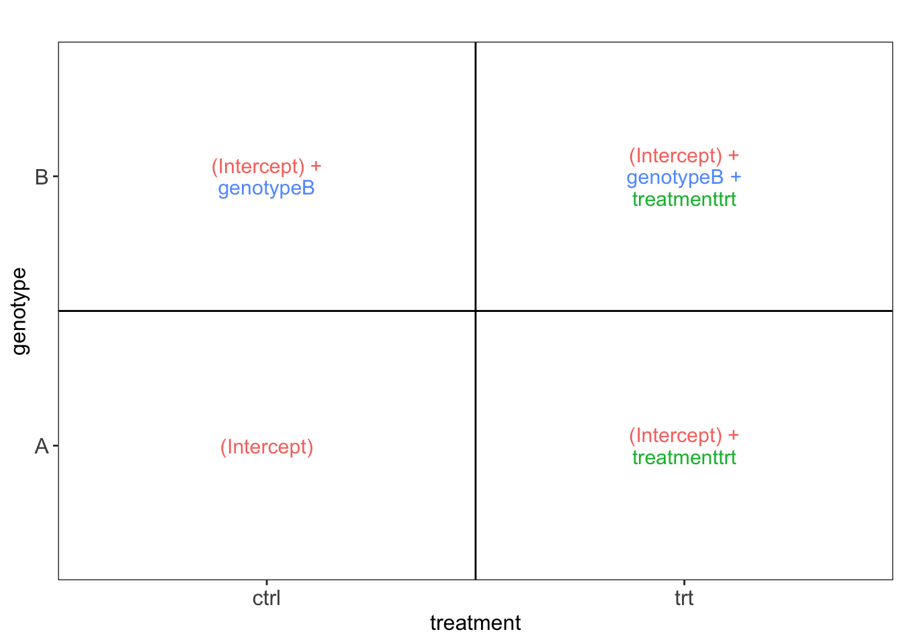
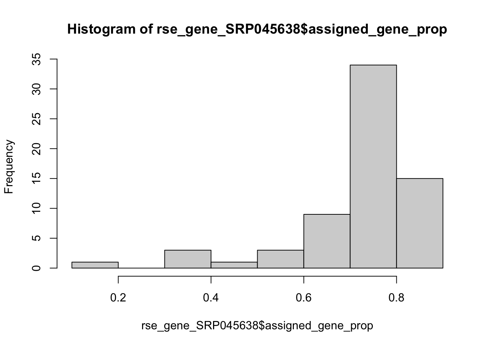
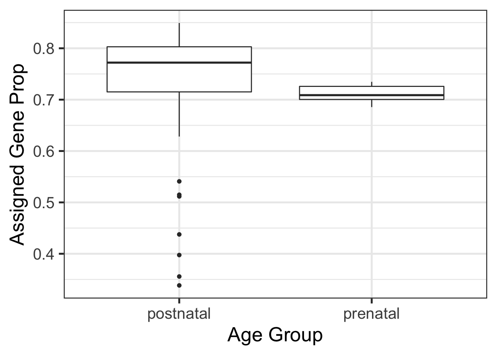
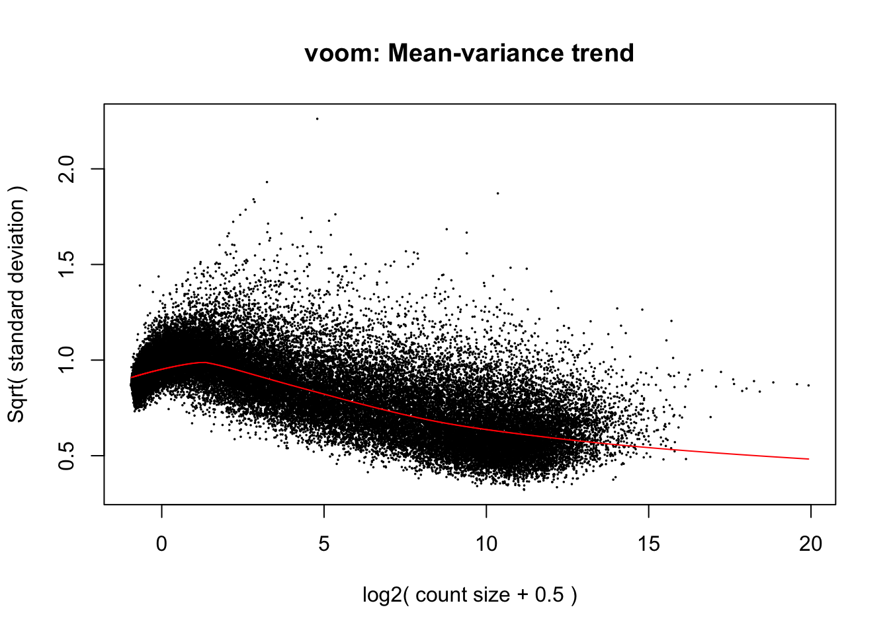
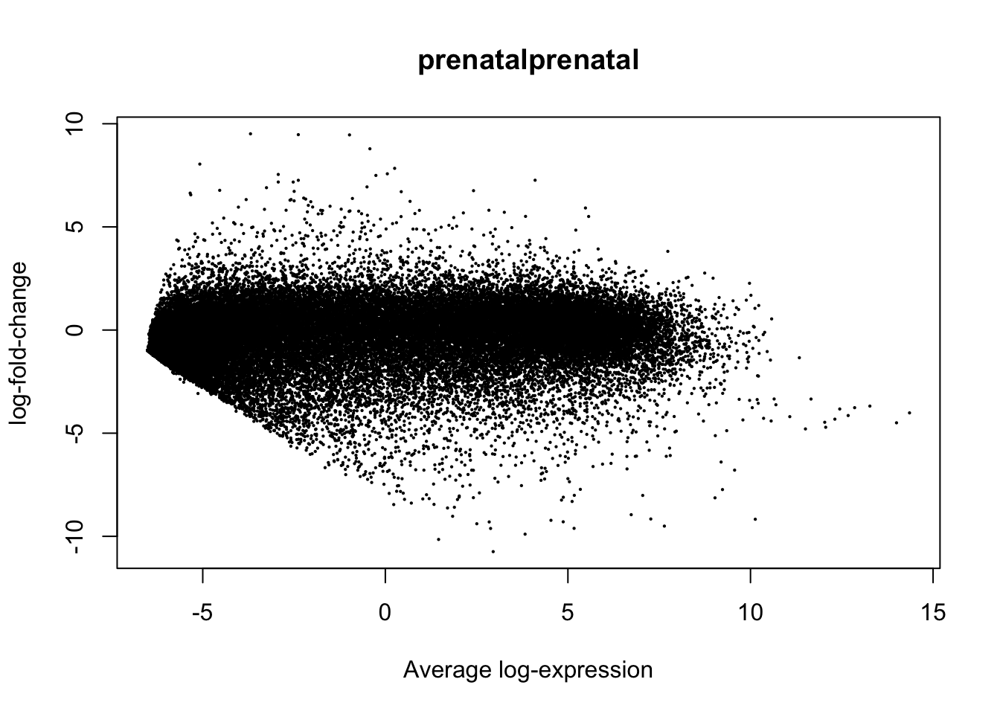
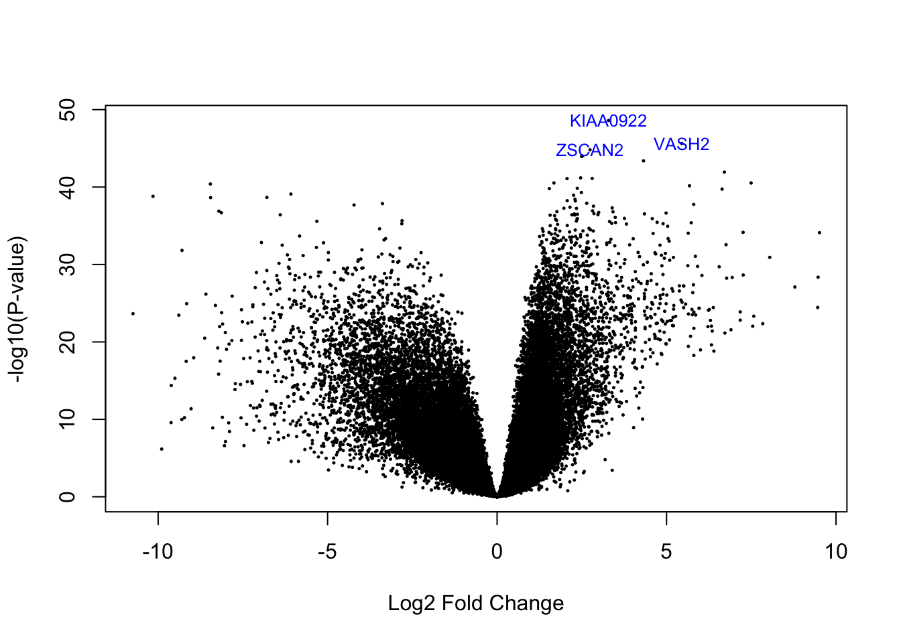
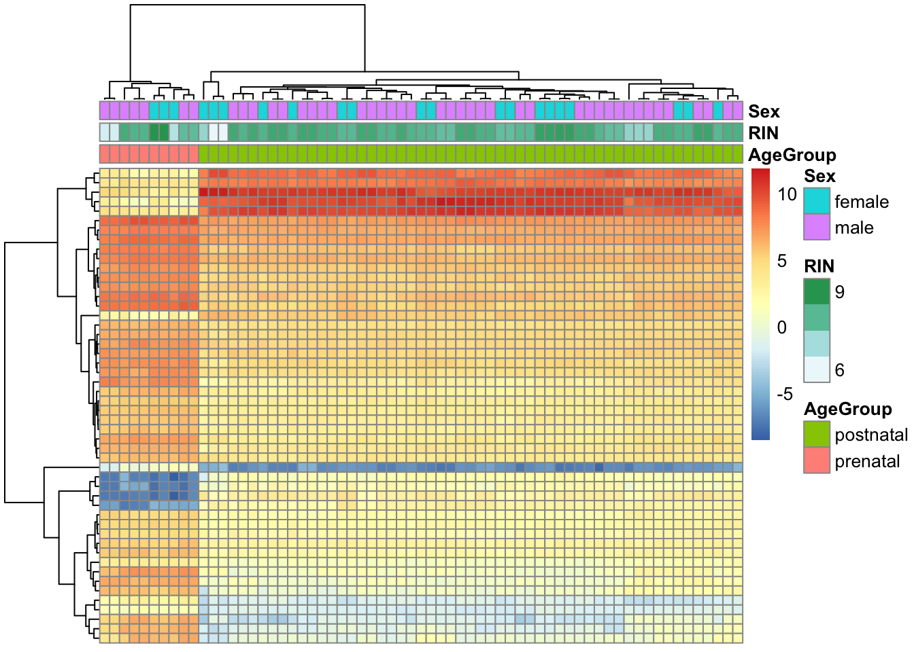
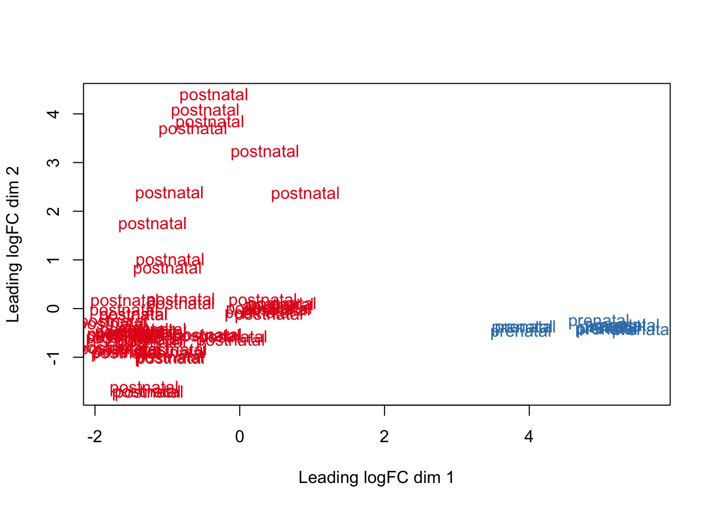
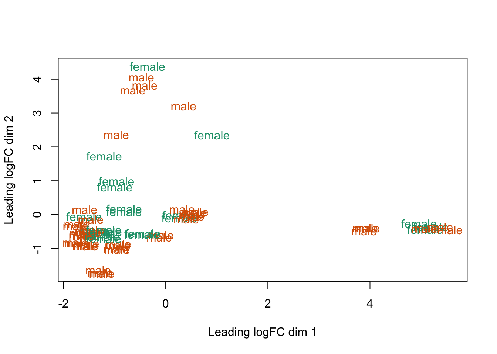
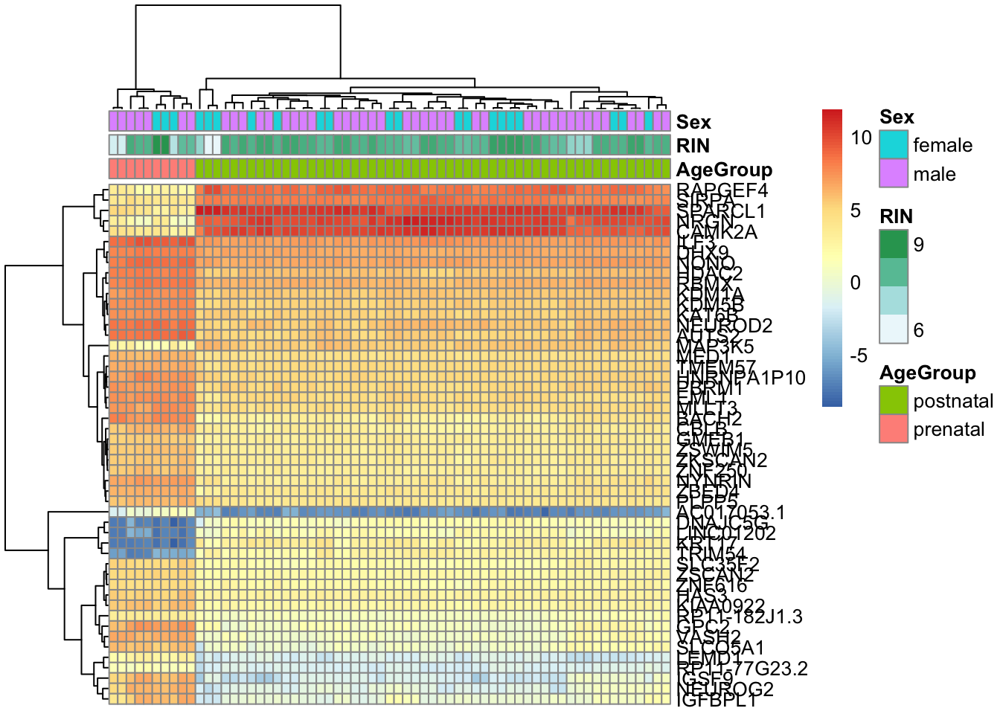

5 Modelos
Revisión de regresión lineal https://lcolladotor.github.io/bioc_team_ds/helping-others.html#linear-regression-example
Con R, usamos mucho la función
model.matrix()y la sintáxis de fórmulaY ~ X1 + X2tal como en el siguiente ejemplo.Signo + dice que tenemos más de una variable relacionado a la variable Y
- cuando tus dos variables entre si \(X_1\) y \(x_2\) están relacionadas
- nivel socioeconómico o ot
- Una sola variable antes de la tilde que es la Y \(Y ~ X_1 + X_2\)
- la Y está relacionada con todas las x`s
- cuando tus dos variables entre si \(X_1\) y \(x_2\) están relacionadas
## (Intercept) log(Height) log(Girth)
## 1 1 4.248495 2.116256
## 2 1 4.174387 2.151762
## 3 1 4.143135 2.174752
## 4 1 4.276666 2.351375
## 5 1 4.394449 2.370244
## 6 1 4.418841 2.379546
## 7 1 4.189655 2.397895
## 8 1 4.317488 2.397895
## 9 1 4.382027 2.406945
## 10 1 4.317488 2.415914
## 11 1 4.369448 2.424803
## 12 1 4.330733 2.433613
## 13 1 4.330733 2.433613
## 14 1 4.234107 2.459589
## 15 1 4.317488 2.484907
## 16 1 4.304065 2.557227
## 17 1 4.442651 2.557227
## 18 1 4.454347 2.587764
## 19 1 4.262680 2.617396
## 20 1 4.158883 2.624669
## 21 1 4.356709 2.639057
## 22 1 4.382027 2.653242
## 23 1 4.304065 2.674149
## 24 1 4.276666 2.772589
## 25 1 4.343805 2.791165
## 26 1 4.394449 2.850707
## 27 1 4.406719 2.862201
## 28 1 4.382027 2.884801
## 29 1 4.382027 2.890372
## 30 1 4.382027 2.890372
## 31 1 4.465908 3.025291
## attr(,"assign")
## [1] 0 1 2## [1] "(Intercept)" "log(Height)" "log(Girth)"- ¿Cómo interpretamos los nombres de las columnas de
mat?
Para cada uno de nuestros betas tenemos dos valores - Valor estimado - desciiación estandar - Valor t si ese beta es significativemten - P value - Buscamos que el valor p sea menor a 0.05 de nuestra muestra
x1 = log(height) x2= log (grith)
Si tenemos 20 mil genes tenemos 20 mil regresiones lineales
##
## Call:
## lm(formula = log(Volume) ~ log(Height) + log(Girth), data = trees)
##
## Residuals:
## Min 1Q Median 3Q Max
## -0.168561 -0.048488 0.002431 0.063637 0.129223
##
## Coefficients:
## Estimate Std. Error t value Pr(>|t|)
## (Intercept) -6.63162 0.79979 -8.292 5.06e-09 ***
## log(Height) 1.11712 0.20444 5.464 7.81e-06 ***
## log(Girth) 1.98265 0.07501 26.432 < 2e-16 ***
## ---
## Signif. codes: 0 '***' 0.001 '**' 0.01 '*' 0.05 '.' 0.1 ' ' 1
##
## Residual standard error: 0.08139 on 28 degrees of freedom
## Multiple R-squared: 0.9777, Adjusted R-squared: 0.9761
## F-statistic: 613.2 on 2 and 28 DF, p-value: < 2.2e-165.1 ExploreModelMatrix
- Es un paquete de Bioconductor que nos ayuda a entender los modelos estadísticos que estamos usando gracias a visualizaciones http://www.bioconductor.org/packages/ExploreModelMatrix/ que está descrito en el siguiente artículo
- Revisaremos los ejemplos en http://www.bioconductor.org/packages/release/bioc/vignettes/ExploreModelMatrix/inst/doc/ExploreModelMatrix.html
5.1.1 Ejemplo 1
library(ExploreModelMatrix)
## Datos de ejemplo
(sampleData <- data.frame(
genotype = rep(c("A", "B"), each = 4),
treatment = rep(c("ctrl", "trt"), 4)
))## genotype treatment
## 1 A ctrl
## 2 A trt
## 3 A ctrl
## 4 A trt
## 5 B ctrl
## 6 B trt
## 7 B ctrl
## 8 B trtmod<- model.matrix(~genotype + treatment, data= sampleData)
## Creemos las imágenes usando ExploreModelMatrix
vd <- ExploreModelMatrix::VisualizeDesign(
sampleData = sampleData,
# tenemos la tilde y no hay nada antes porque no tenemos Y
# genotipo más tratamiento
designFormula = ~ genotype + treatment,
textSizeFitted = 4
)
## Veamos las imágenes
# nos ayuda a interpretar que es cada uno de los coeficientes
# genotipo
# treatmentrt
# Buscar los cuadros que te den genotipo B
cowplot::plot_grid(plotlist = vd$plotlist)
De forma interactiva podemos correr el siguiente código:
5.1.2 Ejemplo 2
- Basado en pregunta de un usuario
- Tenemos 4 variables, respuesta : resistentes sensibles
- ID paciente : 1-6 8,11..
- Tratamiento: pre y post
- ind.n
Divides respuesta= resistente
divides respuesta = sensitiva ### Ejemplo 3
Se le agrega un 0 después de la tilde porque no queremos la variable de intercept se quita la coluna de conditionko_minus porque si no lo elimino en el resultado de R vemos que porque necesitamos que nuestras variables sean independientes
5.1.3 Ejercicio
- Interpreta
ResponseResistant.Treatmentpredel ejercicio 2. Puede ser útil tomar un screenshot (captura de pantalla) y anotarla con líneas de colores. Si haces eso, puedes incluir la imagen en tus notas. - ¿Por qué es clave el
0al inicio de la fórmula en el ejercicio 3?
5.2 Datos de SRP045638
Vamos a usar datos de https://www.ncbi.nlm.nih.gov/sra/?term=SRP045638 procesados con recount3. Primero hay que descargar los datos con los comandos que vimos ayer.
## 2021-02-27 14:55:30 caching file sra.recount_project.MD.gz.## 2021-02-27 14:55:31 caching file gtex.recount_project.MD.gz.## 2021-02-27 14:55:33 caching file tcga.recount_project.MD.gz.rse_gene_SRP045638 <- create_rse(
subset(
human_projects,
project == "SRP045638" & project_type == "data_sources"
)
)## 2021-02-27 14:55:38 downloading and reading the metadata.## 2021-02-27 14:55:41 caching file sra.sra.SRP045638.MD.gz.## 2021-02-27 14:55:42 caching file sra.recount_project.SRP045638.MD.gz.## 2021-02-27 14:55:43 caching file sra.recount_qc.SRP045638.MD.gz.## 2021-02-27 14:55:44 caching file sra.recount_seq_qc.SRP045638.MD.gz.## 2021-02-27 14:55:45 caching file sra.recount_pred.SRP045638.MD.gz.## 2021-02-27 14:55:47 downloading and reading the feature information.## 2021-02-27 14:55:48 caching file human.gene_sums.G026.gtf.gz.## 2021-02-27 14:55:49 downloading and reading the counts: 66 samples across 63856 features.## 2021-02-27 14:55:52 caching file sra.gene_sums.SRP045638.G026.gz.## 2021-02-27 14:55:53 construcing the RangedSummarizedExperiment (rse) object.## project organism file_source project_home project_type n_samples
## 1 SRP107565 human sra data_sources/sra data_sources 216
## 2 SRP149665 human sra data_sources/sra data_sources 4
## 3 SRP017465 human sra data_sources/sra data_sources 23
## 4 SRP119165 human sra data_sources/sra data_sources 6
## 5 SRP133965 human sra data_sources/sra data_sources 12
## 6 SRP096765 human sra data_sources/sra data_sources 7
## 7 SRP124965 human sra data_sources/sra data_sources 12
## 8 SRP189165 human sra data_sources/sra data_sources 15
## 9 SRP050365 human sra data_sources/sra data_sources 10
## 10 SRP123065 human sra data_sources/sra data_sources 41
## 11 SRP162465 human sra data_sources/sra data_sources 8
## 12 SRP178865 human sra data_sources/sra data_sources 24
## 13 SRP032165 human sra data_sources/sra data_sources 24
## 14 SRP125965 human sra data_sources/sra data_sources 72
## 15 SRP120165 human sra data_sources/sra data_sources 18
## 16 SRP044265 human sra data_sources/sra data_sources 6
## 17 SRP014565 human sra data_sources/sra data_sources 1
## 18 SRP057065 human sra data_sources/sra data_sources 51
## 19 SRP117665 human sra data_sources/sra data_sources 9
## 20 SRP049465 human sra data_sources/sra data_sources 4
## 21 SRP007665 human sra data_sources/sra data_sources 1
## 22 SRP124265 human sra data_sources/sra data_sources 2
## 23 SRP187765 human sra data_sources/sra data_sources 14
## 24 SRP157965 human sra data_sources/sra data_sources 63
## 25 SRP150065 human sra data_sources/sra data_sources 18
## 26 SRP201065 human sra data_sources/sra data_sources 4
## 27 SRP169065 human sra data_sources/sra data_sources 12
## 28 SRP119065 human sra data_sources/sra data_sources 4
## 29 SRP048565 human sra data_sources/sra data_sources 18
## 30 SRP092465 human sra data_sources/sra data_sources 8
## 31 SRP047065 human sra data_sources/sra data_sources 13
## 32 SRP105765 human sra data_sources/sra data_sources 6
## 33 SRP013565 human sra data_sources/sra data_sources 2212
## 34 SRP072665 human sra data_sources/sra data_sources 9
## 35 SRP132065 human sra data_sources/sra data_sources 3
## 36 SRP094565 human sra data_sources/sra data_sources 24
## 37 SRP187565 human sra data_sources/sra data_sources 12
## 38 SRP212065 human sra data_sources/sra data_sources 11
## 39 SRP126165 human sra data_sources/sra data_sources 30
## 40 SRP078365 human sra data_sources/sra data_sources 8
## 41 SRP075565 human sra data_sources/sra data_sources 9
## 42 SRP099865 human sra data_sources/sra data_sources 12
## 43 SRP077565 human sra data_sources/sra data_sources 22
## 44 SRP115565 human sra data_sources/sra data_sources 32
## 45 ERP010065 human sra data_sources/sra data_sources 8
## 46 SRP071665 human sra data_sources/sra data_sources 4
## 47 SRP201365 human sra data_sources/sra data_sources 79
## 48 SRP033365 human sra data_sources/sra data_sources 1
## 49 SRP110765 human sra data_sources/sra data_sources 16
## 50 SRP045065 human sra data_sources/sra data_sources 8
## 51 SRP098865 human sra data_sources/sra data_sources 12
## 52 SRP182665 human sra data_sources/sra data_sources 16
## 53 SRP152865 human sra data_sources/sra data_sources 8
## 54 SRP108065 human sra data_sources/sra data_sources 14
## 55 SRP125165 human sra data_sources/sra data_sources 13
## 56 SRP056665 human sra data_sources/sra data_sources 12
## 57 SRP068565 human sra data_sources/sra data_sources 20
## 58 SRP066865 human sra data_sources/sra data_sources 24
## 59 SRP072365 human sra data_sources/sra data_sources 11
## 60 SRP163265 human sra data_sources/sra data_sources 8
## 61 SRP165165 human sra data_sources/sra data_sources 12
## 62 SRP072865 human sra data_sources/sra data_sources 8
## 63 SRP066365 human sra data_sources/sra data_sources 12
## 64 ERP106765 human sra data_sources/sra data_sources 6
## 65 SRP167165 human sra data_sources/sra data_sources 36
## 66 ERP109065 human sra data_sources/sra data_sources 3
## 67 SRP181265 human sra data_sources/sra data_sources 8
## 68 SRP065865 human sra data_sources/sra data_sources 30
## 69 SRP182965 human sra data_sources/sra data_sources 24
## 70 SRP100165 human sra data_sources/sra data_sources 4
## 71 SRP103065 human sra data_sources/sra data_sources 6
## 72 SRP142465 human sra data_sources/sra data_sources 8
## 73 SRP031765 human sra data_sources/sra data_sources 1
## 74 SRP045565 human sra data_sources/sra data_sources 5
## 75 SRP071965 human sra data_sources/sra data_sources 355
## 76 SRP116165 human sra data_sources/sra data_sources 4
## 77 SRP193065 human sra data_sources/sra data_sources 24
## 78 SRP119465 human sra data_sources/sra data_sources 368
## 79 SRP108765 human sra data_sources/sra data_sources 4
## 80 SRP092065 human sra data_sources/sra data_sources 14
## 81 SRP070165 human sra data_sources/sra data_sources 4
## 82 SRP075965 human sra data_sources/sra data_sources 6
## 83 SRP167965 human sra data_sources/sra data_sources 9
## 84 SRP211765 human sra data_sources/sra data_sources 3
## 85 SRP194165 human sra data_sources/sra data_sources 6
## 86 SRP004965 human sra data_sources/sra data_sources 3
## 87 SRP073065 human sra data_sources/sra data_sources 2
## 88 DRP000665 human sra data_sources/sra data_sources 7
## 89 SRP212665 human sra data_sources/sra data_sources 24
## 90 SRP116965 human sra data_sources/sra data_sources 12
## 91 SRP149965 human sra data_sources/sra data_sources 6
## 92 DRP004465 human sra data_sources/sra data_sources 4
## 93 SRP137465 human sra data_sources/sra data_sources 1
## 94 SRP126765 human sra data_sources/sra data_sources 12
## 95 SRP109765 human sra data_sources/sra data_sources 37
## 96 SRP096865 human sra data_sources/sra data_sources 12
## 97 SRP064165 human sra data_sources/sra data_sources 8
## 98 SRP167265 human sra data_sources/sra data_sources 6
## 99 SRP149865 human sra data_sources/sra data_sources 36
## 100 SRP218865 human sra data_sources/sra data_sources 8
## 101 SRP114965 human sra data_sources/sra data_sources 10
## 102 SRP051765 human sra data_sources/sra data_sources 41
## 103 SRP189565 human sra data_sources/sra data_sources 38
## 104 SRP142765 human sra data_sources/sra data_sources 5
## 105 SRP062865 human sra data_sources/sra data_sources 20
## 106 SRP029365 human sra data_sources/sra data_sources 4
## 107 SRP127665 human sra data_sources/sra data_sources 4
## 108 SRP095865 human sra data_sources/sra data_sources 2
## 109 SRP092165 human sra data_sources/sra data_sources 2
## 110 SRP035665 human sra data_sources/sra data_sources 2
## 111 SRP108712 human sra data_sources/sra data_sources 23
## 112 SRP116312 human sra data_sources/sra data_sources 12
## 113 SRP180012 human sra data_sources/sra data_sources 4
## 114 SRP185812 human sra data_sources/sra data_sources 6
## 115 SRP191312 human sra data_sources/sra data_sources 2
## 116 SRP186312 human sra data_sources/sra data_sources 36
## 117 SRP219912 human sra data_sources/sra data_sources 9
## 118 SRP076812 human sra data_sources/sra data_sources 16
## 119 DRP002712 human sra data_sources/sra data_sources 1
## 120 SRP066112 human sra data_sources/sra data_sources 2
## 121 SRP057512 human sra data_sources/sra data_sources 10
## 122 SRP135512 human sra data_sources/sra data_sources 15
## 123 SRP103812 human sra data_sources/sra data_sources 47
## 124 SRP117312 human sra data_sources/sra data_sources 36
## 125 ERP104512 human sra data_sources/sra data_sources 1908
## 126 SRP216512 human sra data_sources/sra data_sources 9
## 127 SRP066012 human sra data_sources/sra data_sources 20
## 128 SRP055512 human sra data_sources/sra data_sources 12
## 129 SRP190212 human sra data_sources/sra data_sources 14
## 130 SRP113012 human sra data_sources/sra data_sources 22
## 131 SRP006912 human sra data_sources/sra data_sources 5
## 132 SRP164912 human sra data_sources/sra data_sources 4
## 133 SRP095212 human sra data_sources/sra data_sources 9
## 134 SRP062212 human sra data_sources/sra data_sources 7
## 135 SRP073112 human sra data_sources/sra data_sources 49
## 136 SRP028912 human sra data_sources/sra data_sources 18
## 137 SRP173312 human sra data_sources/sra data_sources 12
## 138 SRP052612 human sra data_sources/sra data_sources 20
## 139 SRP121512 human sra data_sources/sra data_sources 24
## 140 SRP067012 human sra data_sources/sra data_sources 12
## 141 SRP114312 human sra data_sources/sra data_sources 8
## 142 SRP097912 human sra data_sources/sra data_sources 10
## 143 ERP015612 human sra data_sources/sra data_sources 30
## 144 SRP056612 human sra data_sources/sra data_sources 20
## 145 SRP166012 human sra data_sources/sra data_sources 9
## 146 SRP127412 human sra data_sources/sra data_sources 8
## 147 SRP148112 human sra data_sources/sra data_sources 5
## 148 SRP065812 human sra data_sources/sra data_sources 52
## 149 SRP150612 human sra data_sources/sra data_sources 9
## 150 SRP223012 human sra data_sources/sra data_sources 1
## 151 SRP066912 human sra data_sources/sra data_sources 3
## 152 SRP033612 human sra data_sources/sra data_sources 1
## 153 SRP105312 human sra data_sources/sra data_sources 11
## 154 SRP067312 human sra data_sources/sra data_sources 9
## 155 SRP166112 human sra data_sources/sra data_sources 864
## 156 ERP009612 human sra data_sources/sra data_sources 6
## 157 SRP144312 human sra data_sources/sra data_sources 3
## 158 ERP006112 human sra data_sources/sra data_sources 2
## 159 SRP032812 human sra data_sources/sra data_sources 20
## 160 SRP061412 human sra data_sources/sra data_sources 8
## 161 SRP078912 human sra data_sources/sra data_sources 34
## 162 SRP095512 human sra data_sources/sra data_sources 10
## 163 SRP150212 human sra data_sources/sra data_sources 6
## 164 SRP144912 human sra data_sources/sra data_sources 770
## 165 SRP042212 human sra data_sources/sra data_sources 15
## 166 SRP056912 human sra data_sources/sra data_sources 3
## [ reached 'max' / getOption("max.print") -- omitted 8576 rows ]Una vez descargados y con los números de lecturas podemos usar expand_sra_attributes(). Sin embargo, tenemos un problema con estos datos.
# tiene un development stage fetal que no todos tienen
rse_gene_SRP045638$sra.sample_attributes[1:3]## [1] "age;;67.78|biomaterial_provider;;LIBD|BioSampleModel;;Human|dev_stage;;Fetal|disease;;Control|Fraction;;total|isolate;;DLPFC|race;;AA|RIN;;8.3|sex;;female|tissue;;DLPFC"
## [2] "age;;40.42|biomaterial_provider;;LIBD|BioSampleModel;;Human|disease;;Control|Fraction;;total|isolate;;DLPFC|race;;AA|RIN;;8.4|sex;;male|tissue;;DLPFC"
## [3] "age;;41.58|biomaterial_provider;;LIBD|BioSampleModel;;Human|disease;;control|Fraction;;total|isolate;;R2869|race;;AA|RIN;;8.7|sex;;male|tissue;;DLPFC"Vamos a intentar resolverlo eliminando información que está presente solo en ciertas muestras.
# gsub permite buscar patrones y cambiarlos, también eliminamos el pipe entonces lo escapamos con \\
rse_gene_SRP045638$sra.sample_attributes <- gsub("dev_stage;;Fetal\\|", "", rse_gene_SRP045638$sra.sample_attributes)
# checamos y ya está correcto
rse_gene_SRP045638$sra.sample_attributes[1:3]## [1] "age;;67.78|biomaterial_provider;;LIBD|BioSampleModel;;Human|disease;;Control|Fraction;;total|isolate;;DLPFC|race;;AA|RIN;;8.3|sex;;female|tissue;;DLPFC"
## [2] "age;;40.42|biomaterial_provider;;LIBD|BioSampleModel;;Human|disease;;Control|Fraction;;total|isolate;;DLPFC|race;;AA|RIN;;8.4|sex;;male|tissue;;DLPFC"
## [3] "age;;41.58|biomaterial_provider;;LIBD|BioSampleModel;;Human|disease;;control|Fraction;;total|isolate;;R2869|race;;AA|RIN;;8.7|sex;;male|tissue;;DLPFC"Ahora si podemos continuar con el mismo código de ayer.
rse_gene_SRP045638 <- expand_sra_attributes(rse_gene_SRP045638)
colData(rse_gene_SRP045638)[
,
grepl("^sra_attribute", colnames(colData(rse_gene_SRP045638)))
]## DataFrame with 66 rows and 10 columns
## sra_attribute.age sra_attribute.biomaterial_provider sra_attribute.BioSampleModel sra_attribute.disease
## <character> <character> <character> <character>
## SRR2071341 67.78 LIBD Human Control
## SRR2071345 40.42 LIBD Human Control
## SRR2071346 41.58 LIBD Human control
## SRR2071347 44.17 LIBD Human control
## SRR2071348 -0.3836 LIBD Human control
## ... ... ... ... ...
## SRR2071366 66.72 LIBD Human control
## SRR2071372 43.88 LIBD Human control
## SRR2071373 15.17 LIBD Human control
## SRR2071374 70.95 LIBD Human control
## SRR2071375 4.14 LIBD Human control
## sra_attribute.Fraction sra_attribute.isolate sra_attribute.race sra_attribute.RIN sra_attribute.sex
## <character> <character> <character> <character> <character>
## SRR2071341 total DLPFC AA 8.3 female
## SRR2071345 total DLPFC AA 8.4 male
## SRR2071346 total R2869 AA 8.7 male
## SRR2071347 total R3098 AA 5.3 female
## SRR2071348 total R3452 AA 9.6 female
## ... ... ... ... ... ...
## SRR2071366 total R3763 CAUC 7 female
## SRR2071372 total R4166 AA 8.7 male
## SRR2071373 total R4196 CAUC 7.9 female
## SRR2071374 total R4338 AS 8.3 male
## SRR2071375 total R4699 CAUC 8.7 male
## sra_attribute.tissue
## <character>
## SRR2071341 DLPFC
## SRR2071345 DLPFC
## SRR2071346 DLPFC
## SRR2071347 DLPFC
## SRR2071348 DLPFC
## ... ...
## SRR2071366 DLPFC
## SRR2071372 DLPFC
## SRR2071373 DLPFC
## SRR2071374 DLPFC
## SRR2071375 DLPFCComo ahora si vamos a usar esta información para un modelo estadístico, será importante que tengamos en el formato correcto de R a la información que vamos a usar. - Vamos a recompertir al objeto de R que queremos - RIN es RNA integrity number (se usa para ver qué tan bien está la muestra, valores más altos son mejores. Se intenta usar RIN 7 o más )
## Pasar de character a nuemric o factor
# volvemos numericos
rse_gene_SRP045638$sra_attribute.age <- as.numeric(rse_gene_SRP045638$sra_attribute.age)
# volvemos categóricos
rse_gene_SRP045638$sra_attribute.disease <- factor(rse_gene_SRP045638$sra_attribute.disease)
rse_gene_SRP045638$sra_attribute.RIN <- as.numeric(rse_gene_SRP045638$sra_attribute.RIN)
rse_gene_SRP045638$sra_attribute.sex <- factor(rse_gene_SRP045638$sra_attribute.sex)
## Resumen de las variables de interés
summary(as.data.frame(colData(rse_gene_SRP045638)[
,
grepl("^sra_attribute.[age|disease|RIN|sex]", colnames(colData(rse_gene_SRP045638)))
]))## sra_attribute.age sra_attribute.disease sra_attribute.isolate sra_attribute.RIN sra_attribute.sex
## Min. :-0.4986 control:62 Length:66 Min. :5.30 female:22
## 1st Qu.: 0.3424 Control: 4 Class :character 1st Qu.:8.00 male :44
## Median :14.9000 Mode :character Median :8.30
## Mean :22.6286 Mean :8.15
## 3rd Qu.:41.2900 3rd Qu.:8.70
## Max. :73.9100 Max. :9.60Ahora crearemos un par de variables para que las podamos usar en nuestro análisis.
## Encontraremos diferencias entre muestra prenatalas vs postnatales
# si la edad es menor a 0 entonces es prenatal si no es postnatal
# el cerebro prentatal y postnatal cambia mucho
rse_gene_SRP045638$prenatal <- factor(ifelse(rse_gene_SRP045638$sra_attribute.age < 0, "prenatal", "postnatal"))
table(rse_gene_SRP045638$prenatal)##
## postnatal prenatal
## 56 10## http://research.libd.org/recount3-docs/docs/quality-check-fields.html
# En recount3 alineamos contra una versión específica de anota
# Da información de la calidad de los datos
# Numero de lecturas asignadas a genes / numero total de lecturas que le dimos a featurecounts
# usando rnaSeq existe el protocolo de polyA o ribozero que son dos tipos de librerias
# intentamos capturar RNA mensajero, muchas de nuestras lecturas pueden provenir de eotras partes # Este porcentaje nos puede ayudar a determinar si hay un problema de calidad en las muestras
# with(colData(rse_gene_SR))
# Se intentan generar al rededor de 80 millones de lecturas
# Si no pudiste generar tantos datos entonces necesitas más réplicas (no lo vimos en 4 muestras entonces probablemente no está expresado)
rse_gene_SRP045638$assigned_gene_prop <- rse_gene_SRP045638$recount_qc.gene_fc_count_all.assigned / rse_gene_SRP045638$recount_qc.gene_fc_count_all.total
# Nos indica que tal vez hay muestras malas
summary(rse_gene_SRP045638$assigned_gene_prop)## Min. 1st Qu. Median Mean 3rd Qu. Max.
## 0.1942 0.7004 0.7591 0.7170 0.7991 0.8493## Hm... veamos si hay una diferencia entre los grupos
# se puede usar purr
# with te ayuda a a indicar que todas las variables viven en colData y ya no pones $
# la media es muy similar entre los dos grupos así como la mediana entre pre y postnatal
with(colData(rse_gene_SRP045638), tapply(assigned_gene_prop, prenatal, summary))## $postnatal
## Min. 1st Qu. Median Mean 3rd Qu. Max.
## 0.1942 0.7072 0.7719 0.7179 0.8017 0.8493
##
## $prenatal
## Min. 1st Qu. Median Mean 3rd Qu. Max.
## 0.6856 0.7004 0.7088 0.7116 0.7259 0.7347A continuación podemos eliminar algunas muestras que consideremos de baja calidad y genes con niveles de expresión muy bajos.
Promedios de expresión a lo largo de las muestras
## Guardemos nuestro objeto entero por si luego cambiamos de opinión
rse_gene_SRP045638_unfiltered <- rse_gene_SRP045638
## Eliminemos a muestras malas
hist(rse_gene_SRP045638$assigned_gene_prop)
##
## FALSE TRUE
## 65 1# me quedo con las mayores a 0.3
# Podríamos eliminar tambien de baja calidad de RIN
rse_gene_SRP045638 <- rse_gene_SRP045638[, rse_gene_SRP045638$assigned_gene_prop > 0.3]
## Calculemos los niveles medios de expresión de los genes en nuestras
## muestras.
## Ojo: en un análisis real probablemente haríamos esto con los RPKMs o CPMs
## en vez de las cuentas.
gene_means <- rowMeans(assay(rse_gene_SRP045638, "counts"))
# 1st qu es muy bajo .1 25% de nuestros genes casi no tienen datos
summary(gene_means)## Min. 1st Qu. Median Mean 3rd Qu. Max.
## 0.0 0.1 2.5 817.5 171.2 1362047.9## [1] 63856## Eliminamos genes
# nos quedamos con al rededor de 75% de los genes
rse_gene_SRP045638 <- rse_gene_SRP045638[gene_means > 0.1, ]
## Dimensiones finales
dim(rse_gene_SRP045638)## [1] 46932 65## Porcentaje de genes que retuvimos
round(nrow(rse_gene_SRP045638) / nrow(rse_gene_SRP045638_unfiltered) * 100, 2)## [1] 73.5Ahora ya estamos listos para continuar con el análisis de expresión diferencial, bueno, casi.
5.3 Normalización de datos
- Lean A hypothetical scenario en uno de los artículos sobre
edgeRhttps://genomebiology.biomedcentral.com/articles/10.1186/gb-2010-11-3-r25#Sec2 para entender un poco sobre el concepto de composition bias.
A hypothetical scenario Estimated normalization factors should ensure that a gene with the same expression level in two samples is not detected as DE. To further highlight the need for more sophisticated normalization procedures in RNA-seq data, consider a simple thought experiment. Imagine we have a sequencing experiment comparing two RNA populations, A and B. In this hypothetical scenario, suppose every gene that is expressed in B is expressed in A with the same number of transcripts. However, assume that sample A also contains a set of genes equal in number and expression that are not expressed in B. Thus, sample A has twice as many total expressed genes as sample B, that is, its RNA production is twice the size of sample B. Suppose that each sample is then sequenced to the same depth. Without any additional adjustment, a gene expressed in both samples will have, on average, half the number of reads from sample A, since the reads are spread over twice as many genes. Therefore, the correct normalization would adjust sample A by a factor of 2.
- Sigue siendo relevante con datos de scRNA-seq como pueden ver en http://bioconductor.org/books/release/OSCA/normalization.html#normalization-by-deconvolution. Ahí descubren una serie de pasos para usar métodos desarrollados para bulk RNA-seq y como se pueden usar en scRNA-seq.
La idea de composition bias sigue siendo relevante
## Bioconductor version 3.12 (BiocManager 1.30.10), R 4.0.3 (2020-10-10)## Installing package(s) 'edgeR'##
## The downloaded binary packages are in
## /var/folders/kc/yp3tpcv95bjfw4sq61_fmnxh0000gn/T//RtmpkGfe6g/downloaded_packages## Loading required package: limma##
## Attaching package: 'limma'## The following object is masked from 'package:BiocGenerics':
##
## plotMA##
## Attaching package: 'edgeR'## The following object is masked from 'package:SingleCellExperiment':
##
## cpm# Para crear un objeto dge
dge <- DGEList(
counts = assay(rse_gene_SRP045638, "counts"),
genes = rowData(rse_gene_SRP045638)
)
# Nos permite ajustar mediante el artículo de arriba
dge <- calcNormFactors(dge)
# Explorar la relación entre las variables
# pre postnatal, sexo y assigned gene proportionEn este punto se recomienda hacer gráficas para explorar la contribución de variables en la variación de niveles de expresión
variancePartition y scatter
5.4 Expresión diferencial
Primero que nada, definamos nuestro modelo estadístico. Típicamente, exploraríamos más los datos para revisar que no haya otros problemas con las muestras y para explorar la relación entre nuestras variables.
library("ggplot2")
ggplot(as.data.frame(colData(rse_gene_SRP045638)), aes(y = assigned_gene_prop, x = prenatal)) +
geom_boxplot() +
theme_bw(base_size = 20) +
ylab("Assigned Gene Prop") +
xlab("Age Group")
Por ejemplo, usando el paquete de variancePartition y scater entre otros tal como exploramos en el siguiente video del club de R de LIBD (notes in English)/
Por ahora continuaremos con el siguiente modelo estadístico.
mod <- model.matrix(~ prenatal + sra_attribute.RIN + sra_attribute.sex + assigned_gene_prop,
data = colData(rse_gene_SRP045638)
)
# Acordarme que era cada uno de los coeficientes
# Cuales son las variables que estamos evaluando además de cual no es el nivel de referencia. El que no es es el male, el que no es es el prenatal
colnames(mod)## [1] "(Intercept)" "prenatalprenatal" "sra_attribute.RIN" "sra_attribute.sexmale"
## [5] "assigned_gene_prop"Ya teniendo el modelo estadístico, podemos usar limma para realizar el análisis de expresión diferencial como tal.
- Existen varios modelos estadísticos para el análisis de expresión diferencial
- Usamos lima que se desarrolló en la era de los microarreglos
- implement amodelos de regresión lineal que permite velocidad y estabilidad
- Mejores estimados de la desviación estandar de los estimados para cada gen
- valores t más estables que se convierten en valores p
- Método voom permite usar lima para datos de expresión de RNAseq
- podemos usar directamente el paquete de EdgeR ya normalizado y nuestro modelo
Volcano plot y ma plot son gráficos básicos d

# version mas eficiente
eb_results <- eBayes(lmFit(vGene))
# tabla con los coeficinetes, valor t , valor p, tenemos que decirle cual es el coeficiente basado en el modelo que nos interesa, intentaremos acomodar nuestro modelo de tal forma que sea la columna 2 el coeficiente que nos interesa
de_results <- topTable(
eb_results,
coef = 2,
number = nrow(rse_gene_SRP045638),
# que no ordene los resultados
sort.by = "none"
)
# logFC es el coeficiente de interés
# mayor expresión en el numerador será positivo el LogFC
# la dirección del logFC concuerda con la dirección del valor p
# identical(sign(de_results$locFc), sign(de_result$t))
dim(de_results)## [1] 46932 16## source type score phase gene_id gene_type gene_name level
## ENSG00000223972.5 HAVANA gene 1735 NA ENSG00000223972.5 transcribed_unprocessed_pseudogene DDX11L1 2
## ENSG00000278267.1 ENSEMBL gene 68 NA ENSG00000278267.1 miRNA MIR6859-1 3
## ENSG00000227232.5 HAVANA gene 1351 NA ENSG00000227232.5 unprocessed_pseudogene WASH7P 2
## ENSG00000284332.1 ENSEMBL gene 138 NA ENSG00000284332.1 miRNA MIR1302-2 3
## ENSG00000243485.5 HAVANA gene 1021 NA ENSG00000243485.5 lincRNA MIR1302-2HG 2
## ENSG00000237613.2 HAVANA gene 1219 NA ENSG00000237613.2 lincRNA FAM138A 2
## havana_gene tag logFC AveExpr t P.Value adj.P.Val B
## ENSG00000223972.5 OTTHUMG00000000961.2 <NA> -0.4464473 -3.4480071 -1.616387 1.108073e-01 1.399351e-01 -5.5871402
## ENSG00000278267.1 <NA> <NA> 1.1238124 -1.3154875 6.175776 4.669176e-08 1.730504e-07 7.9671608
## ENSG00000227232.5 OTTHUMG00000000958.1 <NA> 0.6932616 3.6372886 5.723387 2.807302e-07 9.348513e-07 5.8016259
## ENSG00000284332.1 <NA> <NA> 0.4646765 -5.7349490 1.467797 1.469350e-01 1.811388e-01 -5.7535500
## ENSG00000243485.5 OTTHUMG00000000959.2 ncRNA_host 0.9705984 -0.6684675 5.110633 2.985939e-06 8.551661e-06 3.8413461
## ENSG00000237613.2 OTTHUMG00000000960.1 <NA> -1.5393441 -5.3057586 -4.169751 9.126976e-05 1.967694e-04 0.8591194## Genes diferencialmente expresados entre pre y post natal con FDR < 5%
# FDR= BH por el nombre de los autores
# puedes fijarte en el top 50 con el FDR más chiquitos si fueran muchos pero generalmente salen muy poquitos
table(de_results$adj.P.Val < 0.05)##
## FALSE TRUE
## 12898 34034## Visualicemos los resultados estadísticos
# valores positivos dicen que son mas altos en postnatal, valores negativos dice que son mas expresados en prenatal
plotMA(eb_results, coef = 2)
# volcanoplot muesta en el eje y el valor p pero convertido a -log 10 de tal forma que valores más exremos son valores más chicos del valor p original
#
volcanoplot(eb_results, coef = 2, highlight = 3, names = de_results$gene_name)
# que reslate los 3 genes de mayor señal
de_results[de_results$gene_name %in% c("ZSCAN2", "VASH2", "KIAA0922"), ]## source type score phase gene_id gene_type gene_name level havana_gene tag
## ENSG00000143494.15 HAVANA gene 9086 NA ENSG00000143494.15 protein_coding VASH2 2 OTTHUMG00000036925.5 <NA>
## ENSG00000176371.13 HAVANA gene 4878 NA ENSG00000176371.13 protein_coding ZSCAN2 1 OTTHUMG00000074027.5 <NA>
## ENSG00000121210.15 HAVANA gene 6393 NA ENSG00000121210.15 protein_coding KIAA0922 2 OTTHUMG00000153244.5 <NA>
## logFC AveExpr t P.Value adj.P.Val B
## ENSG00000143494.15 5.451644 1.873147 37.90413 2.394912e-46 5.619900e-42 95.16926
## ENSG00000176371.13 2.742707 2.747266 36.79465 1.543986e-45 2.415411e-41 93.31745
## ENSG00000121210.15 3.290165 2.941427 42.25191 2.535399e-49 1.189913e-44 101.808395.5 Visualizando genes DE
De vGene$E podemos extraer los datos normalizados por limma-voom. Revisemos los top 50 genes diferencialmente expresados.
- Visualizar 10 dimensiones es más fácil
## Extraer valores de los genes de interés
# Extraer de los primero 50 genes ordenados por su valor p y sacas sus valores de expresión normalizados
exprs_heatmap <- vGene$E[rank(de_results$adj.P.Val) <= 50, ]
class(exprs_heatmap)## [1] "matrix" "array"## [1] 50 65## Creemos una tabla con información de las muestras
## y con nombres de columnas más amigables
df <- as.data.frame(colData(rse_gene_SRP045638)[, c("prenatal", "sra_attribute.RIN", "sra_attribute.sex")])
# Cambio los nombres para más orden
colnames(df) <- c("AgeGroup", "RIN", "Sex")
## Hagamos un heatmap
library("pheatmap")
pheatmap(
exprs_heatmap,
# que agrupe los genes tanto en renglones como en cols que son las muestras
cluster_rows = TRUE,
cluster_cols = TRUE,
show_rownames = FALSE,
show_colnames = FALSE,
annotation_col = df
)
# 1 son genes diferenciados en edad pues nos muestra dos grupos muy diferentes , del lado derecho estan todas las de grupo prenatal y postnatal en derecho. 2 rin más bajos en blanco se agrupan, igual podríamos regresar y borrar esas muestras. 3. encuanto a sexo no hay un agrupamiento claro . 5 en el clustering en base a renglones Los resultados que tenemos no son tan sorprendentes porque hay una diferencia enorme en los perfiles de expresión en el DLPFC entre muestra pre y post-natales. Eso lo podemos ver con MDS (multidimensional scaling) tal como describen en este workflow.
## Para colores
library("RColorBrewer")
## Conviertiendo los grupos de edad a colores
col.group <- df$AgeGroup
levels(col.group) <- brewer.pal(nlevels(col.group), "Set1")## Warning in brewer.pal(nlevels(col.group), "Set1"): minimal value for n is 3, returning requested palette with 3 different levelscol.group <- as.character(col.group)
## MDS por grupos de edad multidimensional scalling
plotMDS(vGene$E, labels = df$AgeGroup, col = col.group)
## Conviertiendo los valores de Sex a colores
col.sex <- df$Sex
levels(col.sex) <- brewer.pal(nlevels(col.sex), "Dark2")## Warning in brewer.pal(nlevels(col.sex), "Dark2"): minimal value for n is 3, returning requested palette with 3 different levelscol.sex <- as.character(col.sex)
## MDS por sexo te fijas entonces en que están muy separados entre una condicion y otra
plotMDS(vGene$E, labels = df$Sex, col = col.sex)
5.6 Ejercicio
Agreguen los nombres de los genes a nuestro pheatmap. en los renglones para nuestros colegas biólogos
Pistas:
- Revisen la información de
rowRanges(rse_gene_SRP045638). - Exploren que hace la función
match(). para poder unir dos tablas
## Hagamos un heatmap
library("pheatmap")
nombres_rse_gene <-rowRanges(rse_gene_SRP045638)$gene_name
id_rse_gene <- rowRanges(rse_gene_SRP045638)$gene_id
exprs_heatmap <- vGene$E[rank(de_results$adj.P.Val) <= 50, ]
posiciones <- match(rownames(exprs_heatmap),id_rse_gene)
# hacer un subconjunto de los ronames
filtered_id_names <-rowRanges(rse_gene_SRP045638)$gene_name[posiciones]
# remplazar los nombres de exprs_heatmap
head(exprs_heatmap)## SRR2071341 SRR2071345 SRR2071346 SRR2071347 SRR2071348 SRR2071349 SRR2071350 SRR2071351 SRR2071352
## ENSG00000004487.15 5.692763 5.606393 5.430083 5.1569628 7.518297 7.445085 5.781973 5.448240 7.176618
## ENSG00000204178.9 4.811124 4.885577 4.990490 4.0719548 6.602715 6.447543 4.980434 4.816663 6.493733
## ENSG00000162419.12 3.293328 3.148314 3.171269 2.9890020 5.619231 5.374634 3.465953 3.094800 5.318709
## ENSG00000162415.6 3.160520 3.428597 3.237173 3.4659920 5.835181 5.810944 3.306355 3.105620 5.483980
## ENSG00000085552.16 -2.428045 -1.525600 -1.740955 -0.6997084 5.823926 5.898864 -1.623354 -1.685655 5.064748
## ENSG00000135829.16 6.919710 6.328120 6.620339 6.4279466 8.093594 8.091850 6.715528 6.727098 7.908553
## SRR2071353 SRR2071354 SRR2071355 SRR2071356 SRR2071357 SRR2071358 SRR2071367 SRR2071368 SRR2071369
## ENSG00000004487.15 5.556751 5.342522 5.6108146 5.40123972 5.6778968 5.595721 5.4210528 5.578470 5.741296
## ENSG00000204178.9 4.809241 4.838252 4.9181433 4.97373564 4.9854609 4.864088 5.0068452 4.817734 4.934059
## ENSG00000162419.12 3.279245 3.006375 3.7911593 3.64776299 3.5580599 3.256775 3.4922043 2.914296 3.416849
## ENSG00000162415.6 3.147572 3.447960 3.6808560 3.07208609 3.5643530 3.094852 3.5083692 3.260165 3.342475
## ENSG00000085552.16 -2.239830 -1.171817 0.4056524 0.08769592 0.7091167 -2.021886 -0.7830737 -3.472285 -2.212114
## ENSG00000135829.16 6.404542 6.467804 6.5989476 6.41451229 6.6082238 6.720704 6.7896782 6.507378 6.759352
## SRR2071370 SRR2071371 SRR2071376 SRR2071377 SRR2071378 SRR2071379 SRR1554533 SRR1554534 SRR1554536
## ENSG00000004487.15 5.689600 5.745631 5.635053 7.952253 7.475059 7.979059 5.541552 5.635896 5.106621
## ENSG00000204178.9 4.831015 5.006773 4.664567 6.490166 6.626266 6.593687 4.510478 4.910449 4.104646
## ENSG00000162419.12 3.378930 3.133881 3.413172 5.413163 5.449081 5.542702 3.054074 3.230655 2.792566
## ENSG00000162415.6 3.181437 3.326062 3.481478 5.588441 5.535767 5.914072 2.985952 3.441184 3.419442
## ENSG00000085552.16 -2.643438 -2.659916 -1.222757 6.764201 5.767626 6.716638 -2.673846 -1.401001 -0.947675
## ENSG00000135829.16 6.599360 6.820730 6.396282 8.357235 7.931288 8.160919 6.660800 6.373786 6.471711
## SRR1554537 SRR1554539 SRR1554540 SRR1554541 SRR1554542 SRR1554543 SRR1554544 SRR1554546 SRR1554547
## ENSG00000004487.15 7.462966 5.740171 5.459667 7.137450 5.577088 5.329421 5.6039939 5.6851706 5.582526
## ENSG00000204178.9 6.514863 4.958525 4.822441 6.465591 4.821585 4.823587 4.8976781 4.9920093 4.803827
## ENSG00000162419.12 5.561404 3.455911 3.086810 5.278213 3.255795 2.980218 3.7941796 3.5776137 3.211074
## ENSG00000162415.6 5.757972 3.292025 3.131839 5.453689 3.167439 3.450818 3.6835242 3.6047392 3.142075
## ENSG00000085552.16 5.747149 -1.692868 -1.833483 4.980003 -2.324414 -1.136216 0.3565132 0.6784039 -1.874925
## ENSG00000135829.16 8.070399 6.713489 6.761215 7.908621 6.436612 6.473664 6.6091229 6.6381494 6.709908
## SRR1554549 SRR1554550 SRR1554551 SRR1554552 SRR1554553 SRR1554555 SRR1554556 SRR1554557 SRR1554558
## ENSG00000004487.15 5.793989 5.634839 5.62571457 5.758315 5.895725 5.311188 5.411240 5.507535 5.758238
## ENSG00000204178.9 4.884880 4.927770 5.04839907 4.954594 5.311906 5.210338 5.013127 4.842563 4.954765
## ENSG00000162419.12 3.581416 3.341922 3.47329697 3.774569 3.578363 2.381938 3.491525 2.702105 3.439599
## ENSG00000162415.6 3.793732 3.154775 3.66939265 3.587606 3.700661 2.855540 3.514585 3.220487 3.374265
## ENSG00000085552.16 0.350660 -3.571633 0.01017559 -1.113842 0.681692 -3.484311 -1.106573 -3.167138 -2.232827
## ENSG00000135829.16 6.632186 6.579948 6.55151766 6.602276 6.637803 6.788319 6.819976 6.398397 6.819741
## SRR1554559 SRR1554560 SRR1554561 SRR1554562 SRR1554563 SRR1554564 SRR1554565 SRR1554566 SRR1554568
## ENSG00000004487.15 5.626921 5.597127 5.776923 5.458405 5.170338 5.611172 5.649376 7.971356 7.884582
## ENSG00000204178.9 4.791485 5.006111 4.924816 4.748116 4.973657 4.849618 4.682468 6.517027 6.523926
## ENSG00000162419.12 3.363460 3.122409 3.228505 3.329402 3.364144 3.511226 3.412549 5.423178 5.437399
## ENSG00000162415.6 3.113869 3.190260 3.379007 2.747381 3.001906 3.461040 3.490597 5.621171 5.776315
## ENSG00000085552.16 -2.397580 -2.073217 -1.121563 -1.944271 -1.082576 -1.308513 -1.349330 6.722448 6.507928
## ENSG00000135829.16 6.552808 6.699049 6.376832 6.533807 6.421737 6.593186 6.434286 8.399187 8.099988
## SRR2071359 SRR2071360 SRR2071361 SRR2071362 SRR2071363 SRR2071364 SRR2071365 SRR2071372 SRR2071373
## ENSG00000004487.15 5.467089 5.7774767 5.612471 5.6127030 5.765383 5.9287563 5.749363 5.764838 5.449514
## ENSG00000204178.9 4.839733 4.8690042 4.912722 5.0396130 4.945136 5.2379472 5.086634 4.882813 4.728208
## ENSG00000162419.12 3.198120 3.5694797 3.321766 3.4993089 3.775119 3.6102983 3.236050 3.202146 3.350502
## ENSG00000162415.6 3.254771 3.7662727 3.123410 3.6440209 3.590357 3.5663103 3.623968 3.348796 2.738244
## ENSG00000085552.16 -2.254970 0.3482328 -3.638879 0.1027569 -1.112902 0.9033453 -1.264866 -1.098176 -1.817679
## ENSG00000135829.16 6.567280 6.6005127 6.545583 6.5050058 6.579403 6.5488977 6.616591 6.340054 6.493427
## SRR2071374 SRR2071375
## ENSG00000004487.15 5.149179 5.599198
## ENSG00000204178.9 4.940981 4.844950
## ENSG00000162419.12 3.325939 3.523342
## ENSG00000162415.6 2.959642 3.451274
## ENSG00000085552.16 -1.027819 -1.250846
## ENSG00000135829.16 6.410397 6.550054## SRR2071341 SRR2071345 SRR2071346 SRR2071347 SRR2071348 SRR2071349 SRR2071350 SRR2071351
## ENSG00000004487.15 5.6927635 5.60639250 5.4300829 5.1569628 7.5182971 7.445085 5.78197294 5.44824036
## ENSG00000204178.9 4.8111242 4.88557665 4.9904899 4.0719548 6.6027149 6.447543 4.98043404 4.81666268
## ENSG00000162419.12 3.2933280 3.14831362 3.1712692 2.9890020 5.6192313 5.374634 3.46595299 3.09480017
## ENSG00000162415.6 3.1605201 3.42859651 3.2371730 3.4659920 5.8351810 5.810944 3.30635513 3.10562043
## ENSG00000085552.16 -2.4280446 -1.52559980 -1.7409548 -0.6997084 5.8239255 5.898864 -1.62335355 -1.68565475
## ENSG00000135829.16 6.9197096 6.32812014 6.6203392 6.4279466 8.0935936 8.091850 6.71552814 6.72709758
## ENSG00000117139.16 5.1828326 5.19297814 5.0553853 4.9334780 7.7999035 7.809068 5.50995622 5.16587892
## ENSG00000186007.9 -1.3994755 -1.01863981 -0.8234170 -1.2471962 2.5143737 2.438267 -0.93746214 -1.78874824
## ENSG00000143494.15 0.6075793 0.49325923 1.4757012 0.4786288 6.5360710 6.604665 0.88650750 0.48978726
## ENSG00000234149.1 -1.0946209 -1.86663672 -1.9722804 -1.7777110 1.4363711 1.250600 -0.93746214 -1.25823352
## ENSG00000156650.12 5.5878721 5.24814673 4.9403487 5.4132111 7.7639054 7.459461 5.32628288 5.16329190
## ENSG00000110660.14 1.8137956 1.55738956 2.1077840 1.8205484 4.7959087 4.847012 1.69228828 1.32055040
## ENSG00000154146.12 9.6725520 11.36245245 10.7615363 9.3005140 3.5591072 1.060040 10.66381929 10.02091570
## ENSG00000205978.5 2.8573576 3.86852438 3.5055659 4.2883782 6.9708034 7.131151 3.22159096 3.27494643
## ENSG00000066629.16 5.1207002 4.40513754 4.3042487 3.3877544 7.6680601 7.318142 5.12279562 5.19572296
## SRR2071352 SRR2071353 SRR2071354 SRR2071355 SRR2071356 SRR2071357 SRR2071358 SRR2071367
## ENSG00000004487.15 7.176618 5.5567507 5.342522497 5.6108146 5.40123972 5.6778968 5.59572081 5.4210528
## ENSG00000204178.9 6.493733 4.8092409 4.838252396 4.9181433 4.97373564 4.9854609 4.86408784 5.0068452
## ENSG00000162419.12 5.318709 3.2792448 3.006375155 3.7911593 3.64776299 3.5580599 3.25677485 3.4922043
## ENSG00000162415.6 5.483980 3.1475722 3.447959809 3.6808560 3.07208609 3.5643530 3.09485197 3.5083692
## ENSG00000085552.16 5.064748 -2.2398298 -1.171817462 0.4056524 0.08769592 0.7091167 -2.02188579 -0.7830737
## ENSG00000135829.16 7.908553 6.4045416 6.467803929 6.5989476 6.41451229 6.6082238 6.72070435 6.7896782
## ENSG00000117139.16 7.553997 5.1256595 5.196011483 5.3557516 5.78095208 5.4723944 5.34125342 5.1799800
## ENSG00000186007.9 1.969966 -1.5877531 -2.329358739 -2.4017025 -2.50685263 -2.5791283 -0.95775546 -1.2790312
## ENSG00000143494.15 6.722586 0.5870213 0.840566262 2.2944626 1.80639323 2.3822101 0.68191294 0.3780811
## ENSG00000234149.1 1.291423 -1.6779509 -1.506236501 -1.1479459 -1.04218436 -1.5246805 -1.45157007 -1.5200393
## ENSG00000156650.12 7.435749 5.0416036 5.407433444 5.5839205 5.39159761 5.7002144 5.38981777 5.1850171
## ENSG00000110660.14 5.254463 1.9185996 2.383829472 2.4174940 2.75166630 2.9371779 1.82550379 1.6104923
## ENSG00000154146.12 3.246470 10.3798771 10.481537261 10.1817239 8.61185490 9.5372907 10.27413527 10.0979986
## ENSG00000205978.5 6.730769 3.1768170 3.338708004 4.2096061 3.51195956 4.1931228 2.98220696 3.3379417
## ENSG00000066629.16 7.472138 4.8662034 4.469050749 4.3376887 3.99967315 4.3633862 5.08124303 4.8067987
## SRR2071368 SRR2071369 SRR2071370 SRR2071371 SRR2071376 SRR2071377 SRR2071378 SRR2071379 SRR1554533
## ENSG00000004487.15 5.5784704 5.7412962 5.6895997 5.7456311 5.6350531 7.9522525 7.4750586 7.9790595 5.5415522
## ENSG00000204178.9 4.8177337 4.9340592 4.8310152 5.0067733 4.6645675 6.4901663 6.6262658 6.5936869 4.5104784
## ENSG00000162419.12 2.9142959 3.4168489 3.3789298 3.1338812 3.4131718 5.4131627 5.4490809 5.5427024 3.0540744
## ENSG00000162415.6 3.2601649 3.3424751 3.1814371 3.3260618 3.4814778 5.5884407 5.5357675 5.9140716 2.9859517
## ENSG00000085552.16 -3.4722852 -2.2121138 -2.6434380 -2.6599156 -1.2227575 6.7642014 5.7676257 6.7166383 -2.6738460
## ENSG00000135829.16 6.5073782 6.7593521 6.5993601 6.8207303 6.3962816 8.3572347 7.9312885 8.1609193 6.6607997
## ENSG00000117139.16 5.1965998 5.5159906 5.3238641 5.5324946 5.2142677 7.6354156 7.5060939 7.9787155 4.4702457
## ENSG00000186007.9 -1.1503571 -1.3130427 -1.3367766 -1.6259683 -1.7401567 3.2506122 2.8277884 3.2294364 -1.1999148
## ENSG00000143494.15 1.0679074 0.4426190 1.0334470 1.4752439 0.2240426 6.0126527 6.6787295 6.6831084 0.3460535
## ENSG00000234149.1 -1.4484384 -1.1547806 -1.1634450 -0.7854465 -1.3040576 1.8615699 0.9777962 1.5717308 -1.5958435
## ENSG00000156650.12 5.3817520 5.1584558 5.4637103 5.6449517 5.0269891 7.4364788 7.3219500 7.9227110 4.8453534
## ENSG00000110660.14 2.0066866 1.5756123 2.1058140 2.2400886 2.2294696 4.5501335 5.0634459 5.4108815 1.8635881
## ENSG00000154146.12 10.3364444 10.6207709 9.5924346 9.2576873 11.6910003 1.0484787 2.2506377 0.7564473 10.5828050
## ENSG00000205978.5 3.6754285 3.1680840 3.4384309 3.0936991 3.4784421 7.2009756 6.7039720 7.1661404 3.0173159
## ENSG00000066629.16 4.5460077 5.1757871 4.5838613 4.8038033 5.2754496 7.4070817 7.0636727 7.8160365 4.9946451
## SRR1554534 SRR1554536 SRR1554537 SRR1554539 SRR1554540 SRR1554541 SRR1554542 SRR1554543
## ENSG00000004487.15 5.63589572 5.1066210 7.4629660 5.74017060 5.45966653 7.137450 5.5770880 5.32942122
## ENSG00000204178.9 4.91044871 4.1046460 6.5148633 4.95852512 4.82244100 6.465591 4.8215851 4.82358658
## ENSG00000162419.12 3.23065487 2.7925657 5.5614037 3.45591087 3.08681009 5.278213 3.2557949 2.98021804
## ENSG00000162415.6 3.44118404 3.4194419 5.7579718 3.29202479 3.13183934 5.453689 3.1674390 3.45081830
## ENSG00000085552.16 -1.40100087 -0.9476750 5.7471492 -1.69286832 -1.83348321 4.980003 -2.3244141 -1.13621555
## ENSG00000135829.16 6.37378619 6.4717107 8.0703992 6.71348856 6.76121462 7.908621 6.4366122 6.47366370
## ENSG00000117139.16 5.23753031 4.9170739 7.7634112 5.50773841 5.18932844 7.540866 5.1500390 5.20608906
## ENSG00000186007.9 -1.12536643 -2.0851785 2.2919622 -1.13098943 -1.83348321 1.882354 -1.5279475 -2.29375683
## ENSG00000143494.15 0.50081874 0.6372875 6.4686345 0.83367749 0.44152384 6.698254 0.5672097 0.85129351
## ENSG00000234149.1 -1.74203779 -1.5997517 1.3453544 -0.95590273 -1.26788603 1.273751 -1.7143606 -1.47063459
## ENSG00000156650.12 5.26620407 5.4178521 7.7098905 5.28604639 5.17595355 7.399726 5.0629230 5.39758406
## ENSG00000110660.14 1.51094296 1.9327434 4.7254971 1.68960132 1.28421183 5.152897 1.9314841 2.36774723
## ENSG00000154146.12 11.34415374 9.2282714 3.5113914 10.57549266 9.99056859 3.119644 10.3583842 10.44487137
## ENSG00000205978.5 3.89989353 4.3174072 6.8937697 3.14603544 3.27587735 6.665568 3.1708098 3.30271966
## ENSG00000066629.16 4.43188915 3.4446424 7.6133074 5.10402109 5.21047366 7.447585 4.8865776 4.47238979
## SRR1554544 SRR1554546 SRR1554547 SRR1554549 SRR1554550 SRR1554551 SRR1554552 SRR1554553 SRR1554555
## ENSG00000004487.15 5.6039939 5.6851706 5.58252649 5.7939891 5.6348392 5.62571457 5.7583151 5.8957254 5.3111881
## ENSG00000204178.9 4.8976781 4.9920093 4.80382674 4.8848800 4.9277705 5.04839907 4.9545943 5.3119056 5.2103376
## ENSG00000162419.12 3.7941796 3.5776137 3.21107376 3.5814159 3.3419218 3.47329697 3.7745692 3.5783628 2.3819381
## ENSG00000162415.6 3.6835242 3.6047392 3.14207520 3.7937321 3.1547749 3.66939265 3.5876062 3.7006613 2.8555395
## ENSG00000085552.16 0.3565132 0.6784039 -1.87492516 0.3506600 -3.5716325 0.01017559 -1.1138420 0.6816920 -3.4843105
## ENSG00000135829.16 6.6091229 6.6381494 6.70990779 6.6321858 6.5799478 6.55151766 6.6022759 6.6378034 6.7883193
## ENSG00000117139.16 5.3581035 5.4907658 5.26109364 5.4205833 5.1483266 5.37563551 5.5711297 5.6037779 4.5907229
## ENSG00000186007.9 -2.3524381 -2.6823435 -0.85026310 -2.0167110 -0.5918104 -2.05210868 -1.6857484 -1.4797714 -2.7473449
## ENSG00000143494.15 2.2914181 2.4242789 0.52448169 1.8272728 0.6071706 2.52931346 0.5886140 1.8647581 0.9080069
## ENSG00000234149.1 -1.0986815 -1.4979189 -1.60362314 -0.9881419 -1.4561553 -1.09517741 -1.1672813 -0.9728114 -2.7473449
## ENSG00000156650.12 5.5841999 5.7266617 5.19301911 5.4072032 5.0352867 5.70474194 5.3624807 5.4872273 4.9627727
## ENSG00000110660.14 2.3775748 2.9588872 1.81012567 2.3700999 1.8546322 2.38790548 2.0325762 2.6342449 2.5960629
## ENSG00000154146.12 10.1443581 9.5019402 10.50087266 10.1230833 10.6857799 9.88718964 10.9311171 9.9820042 9.2297203
## ENSG00000205978.5 4.1986046 4.1812797 3.12662863 3.7709304 3.1364934 4.07353269 3.1090187 4.0388300 3.4660024
## ENSG00000066629.16 4.3319060 4.3709654 5.09721287 4.4328504 5.1253350 4.25167206 5.2868822 4.9666590 4.3548933
## SRR1554556 SRR1554557 SRR1554558 SRR1554559 SRR1554560 SRR1554561 SRR1554562 SRR1554563 SRR1554564
## ENSG00000004487.15 5.4112402 5.5075355 5.7582381 5.6269208 5.5971272 5.7769234 5.4584050 5.1703380 5.6111724
## ENSG00000204178.9 5.0131271 4.8425631 4.9547650 4.7914847 5.0061113 4.9248164 4.7481155 4.9736573 4.8496179
## ENSG00000162419.12 3.4915247 2.7021050 3.4395988 3.3634601 3.1224089 3.2285051 3.3294024 3.3641442 3.5112257
## ENSG00000162415.6 3.5145852 3.2204874 3.3742651 3.1138690 3.1902597 3.3790068 2.7473812 3.0019057 3.4610400
## ENSG00000085552.16 -1.1065732 -3.1671383 -2.2328266 -2.3975796 -2.0732166 -1.1215635 -1.9442705 -1.0825763 -1.3085129
## ENSG00000135829.16 6.8199759 6.3983966 6.8197415 6.5528081 6.6990494 6.3768325 6.5338072 6.4217374 6.5931863
## ENSG00000117139.16 5.1963164 4.7780395 5.5474751 4.9887804 5.2692503 5.5095584 5.5747449 4.8761036 5.3808827
## ENSG00000186007.9 -1.3348422 -0.8986495 -1.4591024 -0.8126171 -1.0313965 -0.7396929 -2.1047352 -1.3608775 -1.2122976
## ENSG00000143494.15 0.3302906 1.0529102 0.3752196 0.9354037 1.5188006 0.8452696 0.4660134 1.1452296 1.1998283
## ENSG00000234149.1 -1.4197311 -1.9827137 -0.9582042 -1.8500918 -0.8752773 -1.9180301 -1.9442705 -1.3608775 -1.6429319
## ENSG00000156650.12 5.1900633 4.9513309 5.1784794 4.9054986 5.4020399 5.4269665 4.5899811 5.2063909 5.2644813
## ENSG00000110660.14 1.5965707 2.1047491 1.5374910 2.2813591 2.4280352 1.5551416 2.0414216 1.9579778 2.2471340
## ENSG00000154146.12 9.9890329 10.8809538 10.5998912 10.0435490 9.9202421 11.4212852 11.0342612 9.5932724 10.1920371
## ENSG00000205978.5 3.3123078 3.8722793 3.1605985 3.5295146 3.3569899 3.9976921 2.7764687 3.0048865 3.8544860
## ENSG00000066629.16 4.8102529 4.4442219 5.1942497 4.5610847 4.7913337 4.9195149 4.9556428 4.7749682 4.7441488
## SRR1554565 SRR1554566 SRR1554568 SRR2071359 SRR2071360 SRR2071361 SRR2071362 SRR2071363 SRR2071364
## ENSG00000004487.15 5.6493765 7.9713559 7.8845822 5.4670888 5.7774767 5.6124715 5.6127030 5.7653829 5.9287563
## ENSG00000204178.9 4.6824677 6.5170273 6.5239255 4.8397330 4.8690042 4.9127220 5.0396130 4.9451357 5.2379472
## ENSG00000162419.12 3.4125486 5.4231780 5.4373994 3.1981203 3.5694797 3.3217661 3.4993089 3.7751190 3.6102983
## ENSG00000162415.6 3.4905970 5.6211712 5.7763146 3.2547705 3.7662727 3.1234103 3.6440209 3.5903565 3.5663103
## ENSG00000085552.16 -1.3493295 6.7224479 6.5079279 -2.2549697 0.3482328 -3.6388794 0.1027569 -1.1129019 0.9033453
## ENSG00000135829.16 6.4342860 8.3991870 8.0999882 6.5672796 6.6005127 6.5455827 6.5050058 6.5794033 6.5488977
## ENSG00000117139.16 5.2393237 7.6681524 7.9234874 5.0399734 5.3906825 5.1148944 5.3275328 5.5496609 5.5449366
## ENSG00000186007.9 -1.7882138 3.1547982 3.0571324 -1.8590411 -2.0847267 -0.6590573 -1.9891655 -1.5692801 -1.3096485
## ENSG00000143494.15 0.2668276 6.0290704 6.6149205 0.4628870 1.7910534 0.6090481 2.4668105 0.6410797 1.6738634
## ENSG00000234149.1 -1.3027869 1.9012638 1.4653888 -1.5487009 -1.0006624 -1.4512524 -1.1078100 -1.1129019 -1.3096485
## ENSG00000156650.12 5.0511300 7.4564386 7.8283394 4.9957858 5.3861355 5.0085790 5.6746734 5.3589800 5.4633408
## ENSG00000110660.14 2.2097811 4.5584180 5.2781954 1.5863325 2.3509019 1.8671526 2.3959021 2.0351222 2.4500884
## ENSG00000154146.12 11.6370342 1.0170058 0.7216099 10.7556412 10.1598156 10.7068723 9.9115225 10.9823666 10.2178730
## ENSG00000205978.5 3.4706401 7.1811818 7.0079968 3.3210007 3.7562401 3.1293049 4.0814497 3.1064308 4.0542872
## ENSG00000066629.16 5.3013691 7.4354900 7.7328372 4.9477985 4.4179858 5.0999634 4.2192614 5.2843558 4.9296246
## SRR2071365 SRR2071372 SRR2071373 SRR2071374 SRR2071375
## ENSG00000004487.15 5.7493628 5.7648383 5.4495145 5.1491791 5.5991985
## ENSG00000204178.9 5.0866337 4.8828127 4.7282085 4.9409810 4.8449503
## ENSG00000162419.12 3.2360502 3.2021457 3.3505022 3.3259389 3.5233418
## ENSG00000162415.6 3.6239682 3.3487956 2.7382435 2.9596421 3.4512740
## ENSG00000085552.16 -1.2648659 -1.0981759 -1.8176793 -1.0278187 -1.2508462
## ENSG00000135829.16 6.6165905 6.3400540 6.4934273 6.4103974 6.5500537
## ENSG00000117139.16 5.6699252 5.4683924 5.5531976 4.8297796 5.3427429
## ENSG00000186007.9 -1.7763663 -0.7530405 -1.9489239 -1.3777611 -1.2508462
## ENSG00000143494.15 1.9334875 0.8113118 0.4269431 1.1445704 1.2204595
## ENSG00000234149.1 -0.5107762 -1.9153119 -1.9489239 -1.4955976 -1.7716784
## ENSG00000156650.12 5.9406538 5.4079038 4.5708996 5.1783316 5.2511718
## ENSG00000110660.14 2.4812222 1.6052600 2.0639002 1.9356555 2.2631804
## ENSG00000154146.12 9.7595398 11.4526423 11.0608798 9.6293898 10.2379829
## ENSG00000205978.5 4.9512646 4.0266440 2.7646672 3.0118597 3.8481429
## ENSG00000066629.16 4.9231877 4.8987746 4.9331369 4.7381240 4.7222640
## [ reached getOption("max.print") -- omitted 35 rows ]row.names(exprs_heatmap) <- filtered_id_names
pheatmap(
exprs_heatmap,
# que agrupe los genes tanto en renglones como en cols que son las muestras
cluster_rows = TRUE,
cluster_cols = TRUE,
show_rownames = TRUE,
show_colnames = FALSE,
annotation_col = df
)
5.7 Comunidad
Algunxs de lxs autores de ExploreModelMatrix:
Algunxs de lxs autores de edgeR y limma:
- https://twitter.com/mritchieau
- https://twitter.com/davisjmcc
- https://twitter.com/markrobinsonca
- https://twitter.com/AliciaOshlack
If you've ever been dazed by design matrices or confused by contrasts when performing gene expression analysis in limma, the new article by Charity Law is for you https://t.co/ZSMOA20tdm #bioconductor #rstats (1/2)
— Matt Ritchie (@mritchieau) December 15, 2020
5.8 Ejercicio: respuesta
## Hagamos un heatmap
library("pheatmap")
nombres_rse_gene <-rowRanges(rse_gene_SRP045638)$gene_name
id_rse_gene <- rowRanges(rse_gene_SRP045638)$gene_id
exprs_heatmap <- vGene$E[rank(de_results$adj.P.Val) <= 50, ]
posiciones <- match(rownames(exprs_heatmap),id_rse_gene)
# hacer un subconjunto de los ronames
filtered_id_names <-rowRanges(rse_gene_SRP045638)$gene_name[posiciones]
# remplazar los nombres de exprs_heatmap
head(exprs_heatmap)## SRR2071341 SRR2071345 SRR2071346 SRR2071347 SRR2071348 SRR2071349 SRR2071350 SRR2071351 SRR2071352
## ENSG00000004487.15 5.692763 5.606393 5.430083 5.1569628 7.518297 7.445085 5.781973 5.448240 7.176618
## ENSG00000204178.9 4.811124 4.885577 4.990490 4.0719548 6.602715 6.447543 4.980434 4.816663 6.493733
## ENSG00000162419.12 3.293328 3.148314 3.171269 2.9890020 5.619231 5.374634 3.465953 3.094800 5.318709
## ENSG00000162415.6 3.160520 3.428597 3.237173 3.4659920 5.835181 5.810944 3.306355 3.105620 5.483980
## ENSG00000085552.16 -2.428045 -1.525600 -1.740955 -0.6997084 5.823926 5.898864 -1.623354 -1.685655 5.064748
## ENSG00000135829.16 6.919710 6.328120 6.620339 6.4279466 8.093594 8.091850 6.715528 6.727098 7.908553
## SRR2071353 SRR2071354 SRR2071355 SRR2071356 SRR2071357 SRR2071358 SRR2071367 SRR2071368 SRR2071369
## ENSG00000004487.15 5.556751 5.342522 5.6108146 5.40123972 5.6778968 5.595721 5.4210528 5.578470 5.741296
## ENSG00000204178.9 4.809241 4.838252 4.9181433 4.97373564 4.9854609 4.864088 5.0068452 4.817734 4.934059
## ENSG00000162419.12 3.279245 3.006375 3.7911593 3.64776299 3.5580599 3.256775 3.4922043 2.914296 3.416849
## ENSG00000162415.6 3.147572 3.447960 3.6808560 3.07208609 3.5643530 3.094852 3.5083692 3.260165 3.342475
## ENSG00000085552.16 -2.239830 -1.171817 0.4056524 0.08769592 0.7091167 -2.021886 -0.7830737 -3.472285 -2.212114
## ENSG00000135829.16 6.404542 6.467804 6.5989476 6.41451229 6.6082238 6.720704 6.7896782 6.507378 6.759352
## SRR2071370 SRR2071371 SRR2071376 SRR2071377 SRR2071378 SRR2071379 SRR1554533 SRR1554534 SRR1554536
## ENSG00000004487.15 5.689600 5.745631 5.635053 7.952253 7.475059 7.979059 5.541552 5.635896 5.106621
## ENSG00000204178.9 4.831015 5.006773 4.664567 6.490166 6.626266 6.593687 4.510478 4.910449 4.104646
## ENSG00000162419.12 3.378930 3.133881 3.413172 5.413163 5.449081 5.542702 3.054074 3.230655 2.792566
## ENSG00000162415.6 3.181437 3.326062 3.481478 5.588441 5.535767 5.914072 2.985952 3.441184 3.419442
## ENSG00000085552.16 -2.643438 -2.659916 -1.222757 6.764201 5.767626 6.716638 -2.673846 -1.401001 -0.947675
## ENSG00000135829.16 6.599360 6.820730 6.396282 8.357235 7.931288 8.160919 6.660800 6.373786 6.471711
## SRR1554537 SRR1554539 SRR1554540 SRR1554541 SRR1554542 SRR1554543 SRR1554544 SRR1554546 SRR1554547
## ENSG00000004487.15 7.462966 5.740171 5.459667 7.137450 5.577088 5.329421 5.6039939 5.6851706 5.582526
## ENSG00000204178.9 6.514863 4.958525 4.822441 6.465591 4.821585 4.823587 4.8976781 4.9920093 4.803827
## ENSG00000162419.12 5.561404 3.455911 3.086810 5.278213 3.255795 2.980218 3.7941796 3.5776137 3.211074
## ENSG00000162415.6 5.757972 3.292025 3.131839 5.453689 3.167439 3.450818 3.6835242 3.6047392 3.142075
## ENSG00000085552.16 5.747149 -1.692868 -1.833483 4.980003 -2.324414 -1.136216 0.3565132 0.6784039 -1.874925
## ENSG00000135829.16 8.070399 6.713489 6.761215 7.908621 6.436612 6.473664 6.6091229 6.6381494 6.709908
## SRR1554549 SRR1554550 SRR1554551 SRR1554552 SRR1554553 SRR1554555 SRR1554556 SRR1554557 SRR1554558
## ENSG00000004487.15 5.793989 5.634839 5.62571457 5.758315 5.895725 5.311188 5.411240 5.507535 5.758238
## ENSG00000204178.9 4.884880 4.927770 5.04839907 4.954594 5.311906 5.210338 5.013127 4.842563 4.954765
## ENSG00000162419.12 3.581416 3.341922 3.47329697 3.774569 3.578363 2.381938 3.491525 2.702105 3.439599
## ENSG00000162415.6 3.793732 3.154775 3.66939265 3.587606 3.700661 2.855540 3.514585 3.220487 3.374265
## ENSG00000085552.16 0.350660 -3.571633 0.01017559 -1.113842 0.681692 -3.484311 -1.106573 -3.167138 -2.232827
## ENSG00000135829.16 6.632186 6.579948 6.55151766 6.602276 6.637803 6.788319 6.819976 6.398397 6.819741
## SRR1554559 SRR1554560 SRR1554561 SRR1554562 SRR1554563 SRR1554564 SRR1554565 SRR1554566 SRR1554568
## ENSG00000004487.15 5.626921 5.597127 5.776923 5.458405 5.170338 5.611172 5.649376 7.971356 7.884582
## ENSG00000204178.9 4.791485 5.006111 4.924816 4.748116 4.973657 4.849618 4.682468 6.517027 6.523926
## ENSG00000162419.12 3.363460 3.122409 3.228505 3.329402 3.364144 3.511226 3.412549 5.423178 5.437399
## ENSG00000162415.6 3.113869 3.190260 3.379007 2.747381 3.001906 3.461040 3.490597 5.621171 5.776315
## ENSG00000085552.16 -2.397580 -2.073217 -1.121563 -1.944271 -1.082576 -1.308513 -1.349330 6.722448 6.507928
## ENSG00000135829.16 6.552808 6.699049 6.376832 6.533807 6.421737 6.593186 6.434286 8.399187 8.099988
## SRR2071359 SRR2071360 SRR2071361 SRR2071362 SRR2071363 SRR2071364 SRR2071365 SRR2071372 SRR2071373
## ENSG00000004487.15 5.467089 5.7774767 5.612471 5.6127030 5.765383 5.9287563 5.749363 5.764838 5.449514
## ENSG00000204178.9 4.839733 4.8690042 4.912722 5.0396130 4.945136 5.2379472 5.086634 4.882813 4.728208
## ENSG00000162419.12 3.198120 3.5694797 3.321766 3.4993089 3.775119 3.6102983 3.236050 3.202146 3.350502
## ENSG00000162415.6 3.254771 3.7662727 3.123410 3.6440209 3.590357 3.5663103 3.623968 3.348796 2.738244
## ENSG00000085552.16 -2.254970 0.3482328 -3.638879 0.1027569 -1.112902 0.9033453 -1.264866 -1.098176 -1.817679
## ENSG00000135829.16 6.567280 6.6005127 6.545583 6.5050058 6.579403 6.5488977 6.616591 6.340054 6.493427
## SRR2071374 SRR2071375
## ENSG00000004487.15 5.149179 5.599198
## ENSG00000204178.9 4.940981 4.844950
## ENSG00000162419.12 3.325939 3.523342
## ENSG00000162415.6 2.959642 3.451274
## ENSG00000085552.16 -1.027819 -1.250846
## ENSG00000135829.16 6.410397 6.550054## SRR2071341 SRR2071345 SRR2071346 SRR2071347 SRR2071348 SRR2071349 SRR2071350 SRR2071351
## ENSG00000004487.15 5.6927635 5.60639250 5.4300829 5.1569628 7.5182971 7.445085 5.78197294 5.44824036
## ENSG00000204178.9 4.8111242 4.88557665 4.9904899 4.0719548 6.6027149 6.447543 4.98043404 4.81666268
## ENSG00000162419.12 3.2933280 3.14831362 3.1712692 2.9890020 5.6192313 5.374634 3.46595299 3.09480017
## ENSG00000162415.6 3.1605201 3.42859651 3.2371730 3.4659920 5.8351810 5.810944 3.30635513 3.10562043
## ENSG00000085552.16 -2.4280446 -1.52559980 -1.7409548 -0.6997084 5.8239255 5.898864 -1.62335355 -1.68565475
## ENSG00000135829.16 6.9197096 6.32812014 6.6203392 6.4279466 8.0935936 8.091850 6.71552814 6.72709758
## ENSG00000117139.16 5.1828326 5.19297814 5.0553853 4.9334780 7.7999035 7.809068 5.50995622 5.16587892
## ENSG00000186007.9 -1.3994755 -1.01863981 -0.8234170 -1.2471962 2.5143737 2.438267 -0.93746214 -1.78874824
## ENSG00000143494.15 0.6075793 0.49325923 1.4757012 0.4786288 6.5360710 6.604665 0.88650750 0.48978726
## ENSG00000234149.1 -1.0946209 -1.86663672 -1.9722804 -1.7777110 1.4363711 1.250600 -0.93746214 -1.25823352
## ENSG00000156650.12 5.5878721 5.24814673 4.9403487 5.4132111 7.7639054 7.459461 5.32628288 5.16329190
## ENSG00000110660.14 1.8137956 1.55738956 2.1077840 1.8205484 4.7959087 4.847012 1.69228828 1.32055040
## ENSG00000154146.12 9.6725520 11.36245245 10.7615363 9.3005140 3.5591072 1.060040 10.66381929 10.02091570
## ENSG00000205978.5 2.8573576 3.86852438 3.5055659 4.2883782 6.9708034 7.131151 3.22159096 3.27494643
## ENSG00000066629.16 5.1207002 4.40513754 4.3042487 3.3877544 7.6680601 7.318142 5.12279562 5.19572296
## SRR2071352 SRR2071353 SRR2071354 SRR2071355 SRR2071356 SRR2071357 SRR2071358 SRR2071367
## ENSG00000004487.15 7.176618 5.5567507 5.342522497 5.6108146 5.40123972 5.6778968 5.59572081 5.4210528
## ENSG00000204178.9 6.493733 4.8092409 4.838252396 4.9181433 4.97373564 4.9854609 4.86408784 5.0068452
## ENSG00000162419.12 5.318709 3.2792448 3.006375155 3.7911593 3.64776299 3.5580599 3.25677485 3.4922043
## ENSG00000162415.6 5.483980 3.1475722 3.447959809 3.6808560 3.07208609 3.5643530 3.09485197 3.5083692
## ENSG00000085552.16 5.064748 -2.2398298 -1.171817462 0.4056524 0.08769592 0.7091167 -2.02188579 -0.7830737
## ENSG00000135829.16 7.908553 6.4045416 6.467803929 6.5989476 6.41451229 6.6082238 6.72070435 6.7896782
## ENSG00000117139.16 7.553997 5.1256595 5.196011483 5.3557516 5.78095208 5.4723944 5.34125342 5.1799800
## ENSG00000186007.9 1.969966 -1.5877531 -2.329358739 -2.4017025 -2.50685263 -2.5791283 -0.95775546 -1.2790312
## ENSG00000143494.15 6.722586 0.5870213 0.840566262 2.2944626 1.80639323 2.3822101 0.68191294 0.3780811
## ENSG00000234149.1 1.291423 -1.6779509 -1.506236501 -1.1479459 -1.04218436 -1.5246805 -1.45157007 -1.5200393
## ENSG00000156650.12 7.435749 5.0416036 5.407433444 5.5839205 5.39159761 5.7002144 5.38981777 5.1850171
## ENSG00000110660.14 5.254463 1.9185996 2.383829472 2.4174940 2.75166630 2.9371779 1.82550379 1.6104923
## ENSG00000154146.12 3.246470 10.3798771 10.481537261 10.1817239 8.61185490 9.5372907 10.27413527 10.0979986
## ENSG00000205978.5 6.730769 3.1768170 3.338708004 4.2096061 3.51195956 4.1931228 2.98220696 3.3379417
## ENSG00000066629.16 7.472138 4.8662034 4.469050749 4.3376887 3.99967315 4.3633862 5.08124303 4.8067987
## SRR2071368 SRR2071369 SRR2071370 SRR2071371 SRR2071376 SRR2071377 SRR2071378 SRR2071379 SRR1554533
## ENSG00000004487.15 5.5784704 5.7412962 5.6895997 5.7456311 5.6350531 7.9522525 7.4750586 7.9790595 5.5415522
## ENSG00000204178.9 4.8177337 4.9340592 4.8310152 5.0067733 4.6645675 6.4901663 6.6262658 6.5936869 4.5104784
## ENSG00000162419.12 2.9142959 3.4168489 3.3789298 3.1338812 3.4131718 5.4131627 5.4490809 5.5427024 3.0540744
## ENSG00000162415.6 3.2601649 3.3424751 3.1814371 3.3260618 3.4814778 5.5884407 5.5357675 5.9140716 2.9859517
## ENSG00000085552.16 -3.4722852 -2.2121138 -2.6434380 -2.6599156 -1.2227575 6.7642014 5.7676257 6.7166383 -2.6738460
## ENSG00000135829.16 6.5073782 6.7593521 6.5993601 6.8207303 6.3962816 8.3572347 7.9312885 8.1609193 6.6607997
## ENSG00000117139.16 5.1965998 5.5159906 5.3238641 5.5324946 5.2142677 7.6354156 7.5060939 7.9787155 4.4702457
## ENSG00000186007.9 -1.1503571 -1.3130427 -1.3367766 -1.6259683 -1.7401567 3.2506122 2.8277884 3.2294364 -1.1999148
## ENSG00000143494.15 1.0679074 0.4426190 1.0334470 1.4752439 0.2240426 6.0126527 6.6787295 6.6831084 0.3460535
## ENSG00000234149.1 -1.4484384 -1.1547806 -1.1634450 -0.7854465 -1.3040576 1.8615699 0.9777962 1.5717308 -1.5958435
## ENSG00000156650.12 5.3817520 5.1584558 5.4637103 5.6449517 5.0269891 7.4364788 7.3219500 7.9227110 4.8453534
## ENSG00000110660.14 2.0066866 1.5756123 2.1058140 2.2400886 2.2294696 4.5501335 5.0634459 5.4108815 1.8635881
## ENSG00000154146.12 10.3364444 10.6207709 9.5924346 9.2576873 11.6910003 1.0484787 2.2506377 0.7564473 10.5828050
## ENSG00000205978.5 3.6754285 3.1680840 3.4384309 3.0936991 3.4784421 7.2009756 6.7039720 7.1661404 3.0173159
## ENSG00000066629.16 4.5460077 5.1757871 4.5838613 4.8038033 5.2754496 7.4070817 7.0636727 7.8160365 4.9946451
## SRR1554534 SRR1554536 SRR1554537 SRR1554539 SRR1554540 SRR1554541 SRR1554542 SRR1554543
## ENSG00000004487.15 5.63589572 5.1066210 7.4629660 5.74017060 5.45966653 7.137450 5.5770880 5.32942122
## ENSG00000204178.9 4.91044871 4.1046460 6.5148633 4.95852512 4.82244100 6.465591 4.8215851 4.82358658
## ENSG00000162419.12 3.23065487 2.7925657 5.5614037 3.45591087 3.08681009 5.278213 3.2557949 2.98021804
## ENSG00000162415.6 3.44118404 3.4194419 5.7579718 3.29202479 3.13183934 5.453689 3.1674390 3.45081830
## ENSG00000085552.16 -1.40100087 -0.9476750 5.7471492 -1.69286832 -1.83348321 4.980003 -2.3244141 -1.13621555
## ENSG00000135829.16 6.37378619 6.4717107 8.0703992 6.71348856 6.76121462 7.908621 6.4366122 6.47366370
## ENSG00000117139.16 5.23753031 4.9170739 7.7634112 5.50773841 5.18932844 7.540866 5.1500390 5.20608906
## ENSG00000186007.9 -1.12536643 -2.0851785 2.2919622 -1.13098943 -1.83348321 1.882354 -1.5279475 -2.29375683
## ENSG00000143494.15 0.50081874 0.6372875 6.4686345 0.83367749 0.44152384 6.698254 0.5672097 0.85129351
## ENSG00000234149.1 -1.74203779 -1.5997517 1.3453544 -0.95590273 -1.26788603 1.273751 -1.7143606 -1.47063459
## ENSG00000156650.12 5.26620407 5.4178521 7.7098905 5.28604639 5.17595355 7.399726 5.0629230 5.39758406
## ENSG00000110660.14 1.51094296 1.9327434 4.7254971 1.68960132 1.28421183 5.152897 1.9314841 2.36774723
## ENSG00000154146.12 11.34415374 9.2282714 3.5113914 10.57549266 9.99056859 3.119644 10.3583842 10.44487137
## ENSG00000205978.5 3.89989353 4.3174072 6.8937697 3.14603544 3.27587735 6.665568 3.1708098 3.30271966
## ENSG00000066629.16 4.43188915 3.4446424 7.6133074 5.10402109 5.21047366 7.447585 4.8865776 4.47238979
## SRR1554544 SRR1554546 SRR1554547 SRR1554549 SRR1554550 SRR1554551 SRR1554552 SRR1554553 SRR1554555
## ENSG00000004487.15 5.6039939 5.6851706 5.58252649 5.7939891 5.6348392 5.62571457 5.7583151 5.8957254 5.3111881
## ENSG00000204178.9 4.8976781 4.9920093 4.80382674 4.8848800 4.9277705 5.04839907 4.9545943 5.3119056 5.2103376
## ENSG00000162419.12 3.7941796 3.5776137 3.21107376 3.5814159 3.3419218 3.47329697 3.7745692 3.5783628 2.3819381
## ENSG00000162415.6 3.6835242 3.6047392 3.14207520 3.7937321 3.1547749 3.66939265 3.5876062 3.7006613 2.8555395
## ENSG00000085552.16 0.3565132 0.6784039 -1.87492516 0.3506600 -3.5716325 0.01017559 -1.1138420 0.6816920 -3.4843105
## ENSG00000135829.16 6.6091229 6.6381494 6.70990779 6.6321858 6.5799478 6.55151766 6.6022759 6.6378034 6.7883193
## ENSG00000117139.16 5.3581035 5.4907658 5.26109364 5.4205833 5.1483266 5.37563551 5.5711297 5.6037779 4.5907229
## ENSG00000186007.9 -2.3524381 -2.6823435 -0.85026310 -2.0167110 -0.5918104 -2.05210868 -1.6857484 -1.4797714 -2.7473449
## ENSG00000143494.15 2.2914181 2.4242789 0.52448169 1.8272728 0.6071706 2.52931346 0.5886140 1.8647581 0.9080069
## ENSG00000234149.1 -1.0986815 -1.4979189 -1.60362314 -0.9881419 -1.4561553 -1.09517741 -1.1672813 -0.9728114 -2.7473449
## ENSG00000156650.12 5.5841999 5.7266617 5.19301911 5.4072032 5.0352867 5.70474194 5.3624807 5.4872273 4.9627727
## ENSG00000110660.14 2.3775748 2.9588872 1.81012567 2.3700999 1.8546322 2.38790548 2.0325762 2.6342449 2.5960629
## ENSG00000154146.12 10.1443581 9.5019402 10.50087266 10.1230833 10.6857799 9.88718964 10.9311171 9.9820042 9.2297203
## ENSG00000205978.5 4.1986046 4.1812797 3.12662863 3.7709304 3.1364934 4.07353269 3.1090187 4.0388300 3.4660024
## ENSG00000066629.16 4.3319060 4.3709654 5.09721287 4.4328504 5.1253350 4.25167206 5.2868822 4.9666590 4.3548933
## SRR1554556 SRR1554557 SRR1554558 SRR1554559 SRR1554560 SRR1554561 SRR1554562 SRR1554563 SRR1554564
## ENSG00000004487.15 5.4112402 5.5075355 5.7582381 5.6269208 5.5971272 5.7769234 5.4584050 5.1703380 5.6111724
## ENSG00000204178.9 5.0131271 4.8425631 4.9547650 4.7914847 5.0061113 4.9248164 4.7481155 4.9736573 4.8496179
## ENSG00000162419.12 3.4915247 2.7021050 3.4395988 3.3634601 3.1224089 3.2285051 3.3294024 3.3641442 3.5112257
## ENSG00000162415.6 3.5145852 3.2204874 3.3742651 3.1138690 3.1902597 3.3790068 2.7473812 3.0019057 3.4610400
## ENSG00000085552.16 -1.1065732 -3.1671383 -2.2328266 -2.3975796 -2.0732166 -1.1215635 -1.9442705 -1.0825763 -1.3085129
## ENSG00000135829.16 6.8199759 6.3983966 6.8197415 6.5528081 6.6990494 6.3768325 6.5338072 6.4217374 6.5931863
## ENSG00000117139.16 5.1963164 4.7780395 5.5474751 4.9887804 5.2692503 5.5095584 5.5747449 4.8761036 5.3808827
## ENSG00000186007.9 -1.3348422 -0.8986495 -1.4591024 -0.8126171 -1.0313965 -0.7396929 -2.1047352 -1.3608775 -1.2122976
## ENSG00000143494.15 0.3302906 1.0529102 0.3752196 0.9354037 1.5188006 0.8452696 0.4660134 1.1452296 1.1998283
## ENSG00000234149.1 -1.4197311 -1.9827137 -0.9582042 -1.8500918 -0.8752773 -1.9180301 -1.9442705 -1.3608775 -1.6429319
## ENSG00000156650.12 5.1900633 4.9513309 5.1784794 4.9054986 5.4020399 5.4269665 4.5899811 5.2063909 5.2644813
## ENSG00000110660.14 1.5965707 2.1047491 1.5374910 2.2813591 2.4280352 1.5551416 2.0414216 1.9579778 2.2471340
## ENSG00000154146.12 9.9890329 10.8809538 10.5998912 10.0435490 9.9202421 11.4212852 11.0342612 9.5932724 10.1920371
## ENSG00000205978.5 3.3123078 3.8722793 3.1605985 3.5295146 3.3569899 3.9976921 2.7764687 3.0048865 3.8544860
## ENSG00000066629.16 4.8102529 4.4442219 5.1942497 4.5610847 4.7913337 4.9195149 4.9556428 4.7749682 4.7441488
## SRR1554565 SRR1554566 SRR1554568 SRR2071359 SRR2071360 SRR2071361 SRR2071362 SRR2071363 SRR2071364
## ENSG00000004487.15 5.6493765 7.9713559 7.8845822 5.4670888 5.7774767 5.6124715 5.6127030 5.7653829 5.9287563
## ENSG00000204178.9 4.6824677 6.5170273 6.5239255 4.8397330 4.8690042 4.9127220 5.0396130 4.9451357 5.2379472
## ENSG00000162419.12 3.4125486 5.4231780 5.4373994 3.1981203 3.5694797 3.3217661 3.4993089 3.7751190 3.6102983
## ENSG00000162415.6 3.4905970 5.6211712 5.7763146 3.2547705 3.7662727 3.1234103 3.6440209 3.5903565 3.5663103
## ENSG00000085552.16 -1.3493295 6.7224479 6.5079279 -2.2549697 0.3482328 -3.6388794 0.1027569 -1.1129019 0.9033453
## ENSG00000135829.16 6.4342860 8.3991870 8.0999882 6.5672796 6.6005127 6.5455827 6.5050058 6.5794033 6.5488977
## ENSG00000117139.16 5.2393237 7.6681524 7.9234874 5.0399734 5.3906825 5.1148944 5.3275328 5.5496609 5.5449366
## ENSG00000186007.9 -1.7882138 3.1547982 3.0571324 -1.8590411 -2.0847267 -0.6590573 -1.9891655 -1.5692801 -1.3096485
## ENSG00000143494.15 0.2668276 6.0290704 6.6149205 0.4628870 1.7910534 0.6090481 2.4668105 0.6410797 1.6738634
## ENSG00000234149.1 -1.3027869 1.9012638 1.4653888 -1.5487009 -1.0006624 -1.4512524 -1.1078100 -1.1129019 -1.3096485
## ENSG00000156650.12 5.0511300 7.4564386 7.8283394 4.9957858 5.3861355 5.0085790 5.6746734 5.3589800 5.4633408
## ENSG00000110660.14 2.2097811 4.5584180 5.2781954 1.5863325 2.3509019 1.8671526 2.3959021 2.0351222 2.4500884
## ENSG00000154146.12 11.6370342 1.0170058 0.7216099 10.7556412 10.1598156 10.7068723 9.9115225 10.9823666 10.2178730
## ENSG00000205978.5 3.4706401 7.1811818 7.0079968 3.3210007 3.7562401 3.1293049 4.0814497 3.1064308 4.0542872
## ENSG00000066629.16 5.3013691 7.4354900 7.7328372 4.9477985 4.4179858 5.0999634 4.2192614 5.2843558 4.9296246
## SRR2071365 SRR2071372 SRR2071373 SRR2071374 SRR2071375
## ENSG00000004487.15 5.7493628 5.7648383 5.4495145 5.1491791 5.5991985
## ENSG00000204178.9 5.0866337 4.8828127 4.7282085 4.9409810 4.8449503
## ENSG00000162419.12 3.2360502 3.2021457 3.3505022 3.3259389 3.5233418
## ENSG00000162415.6 3.6239682 3.3487956 2.7382435 2.9596421 3.4512740
## ENSG00000085552.16 -1.2648659 -1.0981759 -1.8176793 -1.0278187 -1.2508462
## ENSG00000135829.16 6.6165905 6.3400540 6.4934273 6.4103974 6.5500537
## ENSG00000117139.16 5.6699252 5.4683924 5.5531976 4.8297796 5.3427429
## ENSG00000186007.9 -1.7763663 -0.7530405 -1.9489239 -1.3777611 -1.2508462
## ENSG00000143494.15 1.9334875 0.8113118 0.4269431 1.1445704 1.2204595
## ENSG00000234149.1 -0.5107762 -1.9153119 -1.9489239 -1.4955976 -1.7716784
## ENSG00000156650.12 5.9406538 5.4079038 4.5708996 5.1783316 5.2511718
## ENSG00000110660.14 2.4812222 1.6052600 2.0639002 1.9356555 2.2631804
## ENSG00000154146.12 9.7595398 11.4526423 11.0608798 9.6293898 10.2379829
## ENSG00000205978.5 4.9512646 4.0266440 2.7646672 3.0118597 3.8481429
## ENSG00000066629.16 4.9231877 4.8987746 4.9331369 4.7381240 4.7222640
## [ reached getOption("max.print") -- omitted 35 rows ]row.names(exprs_heatmap) <- filtered_id_names
# default value of pdf is 4
pdf("pheatmap_con_nombres.pdf", height=14, useDingbats = FALSE)
## Y luego podemos cambiar el valor de show_rownames de FALSE a TRUE
pheatmap(
exprs_heatmap,
# que agrupe los genes tanto en renglones como en cols que son las muestras
cluster_rows = TRUE,
cluster_cols = TRUE,
show_rownames = TRUE,
show_colnames = FALSE,
annotation_col = df
)
dev.off()## pdf
## 35.9 Específicaciones del proyecto
- Con datos de algún estudio disponible vía
recount3, hagan un análisis de expresión diferencial. - Incluyan al menos 3 gráficas en su reporte.
- Su reporte debe ser público y estar listado en el Google Sheet del curso.
Suena fácil, pero cada estudio tiene sus complejidades.
Hay muchos paquetes que no vimos que les pueden llamar la atención, tal como ideal. En http://research.libd.org/SPEAQeasy-example/bootcamp_intro pueden encontrar varias gráficas que tal vez les quieran reproducir. En fin, ¡esto solo es el inicio!
🎉🎉🎉Our new MS is finally out! Given the timing, Santa had an early round with us 🎅
— Federico Marini (@FedeBioinfo) December 10, 2020
💡https://t.co/a0dHFGWN7V, “ideal: an R/Bioconductor package for interactive differential expression analysis”.
I promise a proper #rstats hexsticker will follow, for now enjoy the package 😉